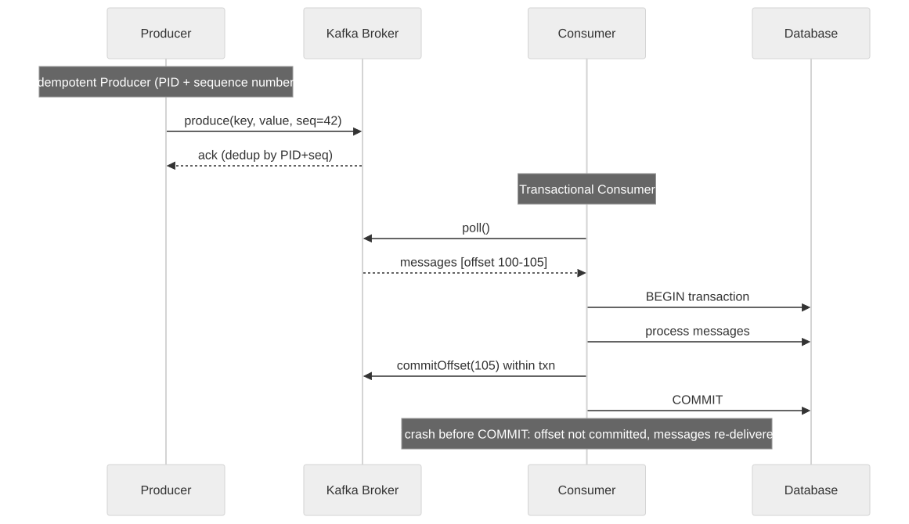
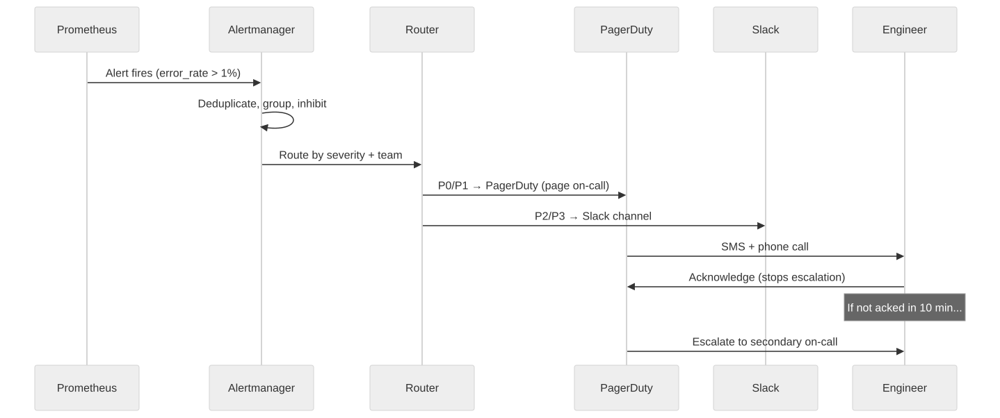
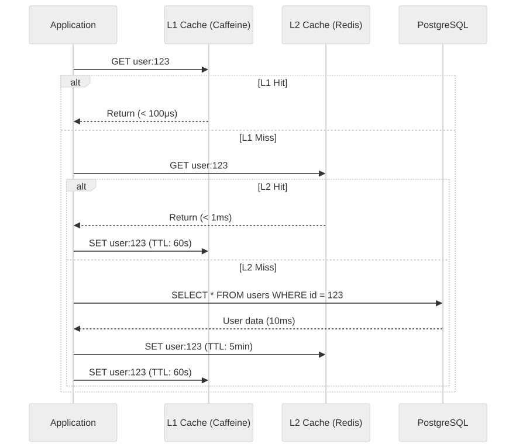
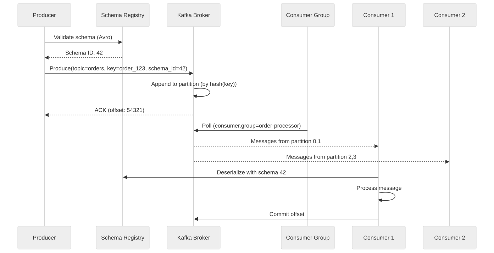
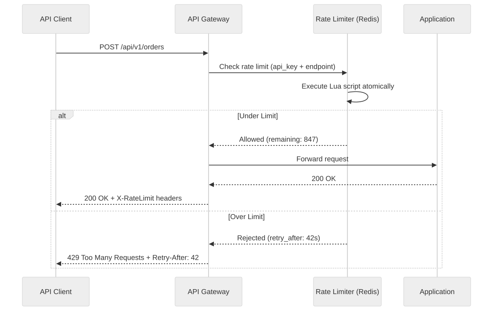
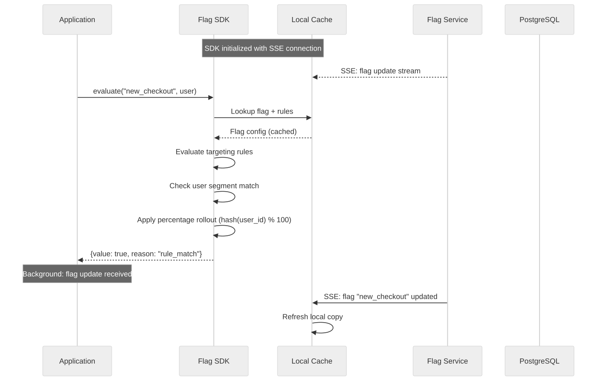
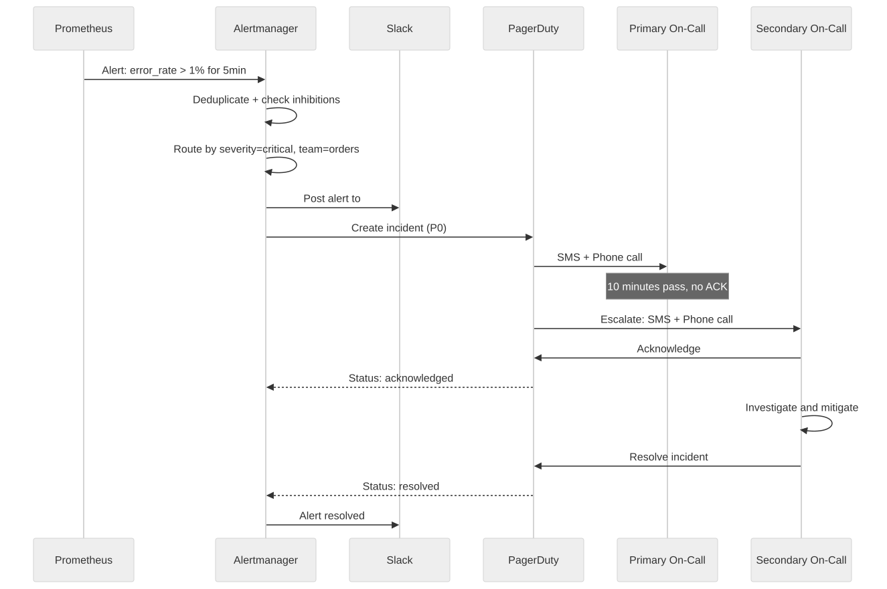
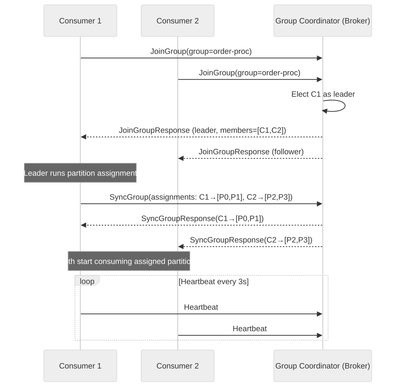
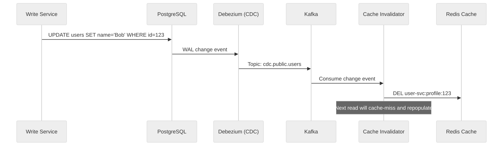

Part Context
Part: Part 5 — Real-World System Design Examples Position: Chapter 38 of 60 Why this part exists: This section translates distributed-systems theory into realistic product designs across consumer apps, marketplaces, media, payments, search, notifications, collaboration, infrastructure, and operations-heavy platforms.
Overview
Cross-cutting infrastructure systems are the invisible backbone of every production application. No matter what domain you operate in — e-commerce, fintech, social media, gaming, or healthcare — you need caching, messaging, rate limiting, feature flags, logging, alerting, and configuration management. These systems don't deliver user-facing features directly, but without them, every user-facing feature degrades, breaks, or becomes unobservable.
This chapter performs a deep-dive into seven infrastructure subsystems that appear in every domain:
Domain A — Data Acceleration
- Caching System (Redis/Memcached) — multi-tier caching, eviction policies, cache topologies (aside/through/behind), stampede prevention, hot key mitigation, distributed cache clustering, and data structure selection.
Domain B — Asynchronous Communication
- Message Queue System (Kafka/RabbitMQ) — pub/sub vs point-to-point, Kafka partitions and consumer groups, exactly-once semantics, schema registry, back-pressure handling, dead letter queues, and stream processing.
Domain C — Traffic Control
- Rate Limiting System — token bucket, sliding window, distributed rate limiting with Redis, adaptive throttling, multi-layer enforcement, and quota management.
Domain D — Release Engineering
- Feature Flag System — boolean/multivariate flags, percentage rollouts, targeting rules, kill switches, A/B test integration, flag lifecycle management, and stale flag cleanup.
Domain E — Observability
- Logging & Monitoring System — structured logging, log aggregation (ELK/Loki), distributed tracing (OpenTelemetry), metrics collection (Prometheus), golden signals, and log sampling.
- Alerting System — SLO-based alerting, escalation policies, on-call rotation, alert deduplication, burn rate alerts, and alert-as-code.
Domain F — Configuration
- Config Management System — centralized stores (Consul/etcd/ZooKeeper), dynamic hot-reload, config versioning, GitOps, drift detection, and environment management.
Every section is written to be useful for learners building mental models, engineers designing production systems, and candidates preparing for system design interviews.
Why This System Matters in Real Systems
- Caching reduces database load by 90%+ and cuts p99 latency from 200ms to 2ms. Without it, most systems would collapse under read traffic.
- Message queues decouple services, absorb traffic spikes, and enable event-driven architectures. Kafka processes trillions of messages per day at LinkedIn.
- Rate limiting prevents abuse, protects backend resources, and ensures fair usage. Stripe rate-limits API calls to prevent cascade failures.
- Feature flags enable safe deployments. Netflix deploys hundreds of times per day using feature flags to control rollout.
- Logging and monitoring make systems observable. Google's SRE practices are built on the "four golden signals" — latency, traffic, errors, saturation.
- Alerting turns observability into action. PagerDuty routes millions of alerts per month across engineering organizations.
- Config management enables dynamic tuning without deploys. Uber uses centralized config to control 4,000+ microservices.
Problem Framing
Business Context
Every engineering team, from a 5-person startup to a 10,000-engineer enterprise, needs these systems. The difference is scale and sophistication: - Startup: Redis for caching, RabbitMQ for queues, environment variables for config, console.log for logging. - Growth stage: Redis Cluster, Kafka, LaunchDarkly, ELK stack, PagerDuty, Consul. - Enterprise: Multi-region Redis with cross-DC replication, Kafka with MirrorMaker 2, custom feature flag platform, Grafana/Loki/Tempo stack, SLO-based alerting, GitOps config.
Assumptions
- Platform serves 50 million daily active users across web and mobile.
- 500 microservices communicating via APIs and events.
- Cache hit ratio target: 95%+ for hot paths.
- Message throughput: 1 million events/second at peak.
- Rate limiting: 100,000 API calls/second across all tenants.
- Log volume: 10 TB/day of structured logs.
- Config changes: 50 per day across all services.
- Feature flags: 500 active flags at any time.
System Boundaries
This chapter covers the infrastructure subsystems themselves. It does not cover: - Application-specific business logic that uses these systems - Cloud provider managed services in depth (covered in Chapter 26) - Security-specific systems like WAF or DDoS protection (covered in Chapter 28)
Functional Requirements
Caching System
| ID | Requirement | Priority |
|---|---|---|
| C-01 | Support GET/SET/DELETE operations with sub-millisecond latency | P0 |
| C-02 | Support TTL-based expiration per key | P0 |
| C-03 | Support multiple eviction policies (LRU, LFU, random, volatile) | P0 |
| C-04 | Support atomic operations (INCR, DECR, SETNX, CAS) | P0 |
| C-05 | Support distributed clustering with automatic sharding | P0 |
| C-06 | Support pub/sub for cache invalidation notifications | P1 |
| C-07 | Support multiple data structures (Strings, Hashes, Lists, Sets, Sorted Sets, Streams) | P0 |
| C-08 | Support pipelining for batch operations | P1 |
| C-09 | Support Lua scripting for complex atomic operations | P1 |
| C-10 | Support probabilistic data structures (HyperLogLog, Bloom filter, Count-Min Sketch) | P2 |
| C-11 | Support key namespacing and tagging for bulk invalidation | P1 |
| C-12 | Support read replicas for read-heavy workloads | P1 |
| C-13 | Support persistence (RDB snapshots, AOF) for durability | P1 |
| C-14 | Support connection pooling and multiplexing | P0 |
| C-15 | Support cache warming/pre-loading from cold start | P1 |
Message Queue System
| ID | Requirement | Priority |
|---|---|---|
| MQ-01 | Support publish/subscribe messaging pattern | P0 |
| MQ-02 | Support point-to-point (work queue) pattern | P0 |
| MQ-03 | Support ordered message delivery within a partition | P0 |
| MQ-04 | Support consumer groups for parallel processing | P0 |
| MQ-05 | Support at-least-once delivery guarantee | P0 |
| MQ-06 | Support exactly-once semantics (idempotent producers + transactional consumers) | P1 |
| MQ-07 | Support message replay from arbitrary offset | P0 |
| MQ-08 | Support dead letter queues for failed messages | P0 |
| MQ-09 | Support schema registry for message format validation | P1 |
| MQ-10 | Support topic compaction for state changelog patterns | P1 |
| MQ-11 | Support configurable retention (time-based, size-based) | P0 |
| MQ-12 | Support back-pressure handling and flow control | P1 |
| MQ-13 | Support message filtering and routing | P1 |
| MQ-14 | Support consumer lag monitoring | P0 |
| MQ-15 | Support cross-cluster replication for multi-region | P1 |
Rate Limiting System
| ID | Requirement | Priority |
|---|---|---|
| RL-01 | Enforce rate limits per API key, user, IP, or endpoint | P0 |
| RL-02 | Support multiple algorithms (token bucket, sliding window, fixed window) | P0 |
| RL-03 | Return standard rate limit headers (X-RateLimit-Limit, Remaining, Reset) | P0 |
| RL-04 | Support distributed rate limiting across multiple nodes | P0 |
| RL-05 | Support burst allowance (temporary over-limit) | P1 |
| RL-06 | Support tiered rate limits (free/basic/premium/enterprise) | P0 |
| RL-07 | Support adaptive rate limiting based on system load | P2 |
| RL-08 | Support bypass tokens for internal services | P1 |
| RL-09 | Support rate limit overrides per client | P1 |
| RL-10 | Support real-time rate limit dashboard | P1 |
| RL-11 | Support webhook/event on limit breach | P2 |
| RL-12 | Support rate limiting at multiple layers (gateway, app, DB) | P1 |
Feature Flag System
| ID | Requirement | Priority |
|---|---|---|
| FF-01 | Support boolean on/off flags | P0 |
| FF-02 | Support multivariate flags (string, number, JSON) | P0 |
| FF-03 | Support percentage-based rollouts | P0 |
| FF-04 | Support user targeting rules (segments, attributes) | P0 |
| FF-05 | Support kill switches (instant global disable) | P0 |
| FF-06 | Support flag dependencies (flag A requires flag B) | P2 |
| FF-07 | Support environment isolation (dev/staging/prod) | P0 |
| FF-08 | Support audit log for all flag changes | P0 |
| FF-09 | Support gradual rollout with automatic rollback on error spike | P1 |
| FF-10 | Support A/B test experiment integration | P1 |
| FF-11 | Support stale flag detection and cleanup | P1 |
| FF-12 | Support flag evaluation without network call (local SDK cache) | P0 |
| FF-13 | Support real-time flag updates via SSE/WebSocket | P1 |
| FF-14 | Support RBAC for flag management | P1 |
| FF-15 | Support scheduled flag activation/deactivation | P2 |
Logging & Monitoring System
| ID | Requirement | Priority |
|---|---|---|
| LM-01 | Ingest structured JSON logs from all services | P0 |
| LM-02 | Support log levels (DEBUG, INFO, WARN, ERROR, FATAL) | P0 |
| LM-03 | Support full-text search across all logs | P0 |
| LM-04 | Support distributed tracing with correlation IDs | P0 |
| LM-05 | Collect metrics (counters, gauges, histograms, summaries) | P0 |
| LM-06 | Support metric aggregation and querying (PromQL) | P0 |
| LM-07 | Support log sampling for high-volume services | P1 |
| LM-08 | Support log retention policies (hot/warm/cold/archive) | P0 |
| LM-09 | Support PII redaction in logs | P0 |
| LM-10 | Support real-time log tailing | P1 |
| LM-11 | Support metric cardinality management | P1 |
| LM-12 | Support trace-to-log and trace-to-metric correlation | P1 |
| LM-13 | Support dashboard creation (Grafana) | P0 |
| LM-14 | Support anomaly detection on metrics | P2 |
| LM-15 | Support log-based alerting | P1 |
Alerting System
| ID | Requirement | Priority |
|---|---|---|
| AL-01 | Route alerts to correct on-call engineer | P0 |
| AL-02 | Support severity levels (P0-Critical, P1-High, P2-Medium, P3-Low) | P0 |
| AL-03 | Support escalation policies (if not acked in N min, escalate) | P0 |
| AL-04 | Support on-call rotation schedules | P0 |
| AL-05 | Deduplicate repeated alerts | P0 |
| AL-06 | Support alert correlation (group related alerts) | P1 |
| AL-07 | Support silence/inhibition rules (maintenance windows) | P0 |
| AL-08 | Support SLO-based alerting (error budget burn rate) | P1 |
| AL-09 | Support multi-window burn rate alerts | P1 |
| AL-10 | Support runbook links in alerts | P1 |
| AL-11 | Support multiple notification channels (Slack, PagerDuty, email, SMS) | P0 |
| AL-12 | Support alert-as-code (version-controlled alert definitions) | P1 |
Config Management System
| ID | Requirement | Priority |
|---|---|---|
| CM-01 | Store key-value configuration with namespacing | P0 |
| CM-02 | Support dynamic hot-reload without service restart | P0 |
| CM-03 | Support config versioning and rollback | P0 |
| CM-04 | Support environment hierarchy (default → env → service → instance) | P0 |
| CM-05 | Support config validation against schema | P1 |
| CM-06 | Support config change audit trail | P0 |
| CM-07 | Support config encryption for sensitive values | P0 |
| CM-08 | Support config change notifications (watch) | P1 |
| CM-09 | Support config drift detection | P2 |
| CM-10 | Support GitOps-driven config deployment | P1 |
| CM-11 | Separate config from secrets (secrets go to Vault) | P0 |
| CM-12 | Support A/B config variants | P2 |
Non-Functional Requirements
| Subsystem | Latency (p99) | Availability | Throughput |
|---|---|---|---|
| Redis Cache | < 1ms (local), < 5ms (remote) | 99.99% | 500K ops/sec per node |
| Kafka | < 10ms (produce ACK), < 100ms end-to-end | 99.99% | 1M msgs/sec per cluster |
| Rate Limiter | < 2ms per check | 99.99% | 100K checks/sec |
| Feature Flags | < 5ms SDK evaluation (cached), < 50ms API | 99.99% | 50K evaluations/sec per node |
| Log Ingestion | < 5s ingest-to-searchable | 99.9% | 10 TB/day |
| Alerting | < 60s detection-to-notification | 99.99% | 10K alert evaluations/min |
| Config Store | < 10ms read, < 100ms write | 99.999% | 10K reads/sec |
Capacity Estimation
Caching
Active users: 50M DAU, 500K concurrent peak
Cache entries: 500M keys
Average value size: 1 KB
Total cache memory: 500M * 1 KB = 500 GB
With replication (3x): 1.5 TB across cluster
Hit ratio target: 95%
Operations: 500K reads/sec peak, 50K writes/sec
Redis nodes (64 GB each): 500 GB / 64 GB = 8 primary + 8 replica = 16 nodes
Message Queues (Kafka)
Events per second: 1M peak
Average message size: 500 bytes
Throughput: 1M * 500 B = 500 MB/sec
Retention: 7 days
Storage: 500 MB/sec * 86400 * 7 = 302 TB
With replication factor 3: 906 TB
Partitions per topic: 64 (for key topics)
Brokers: 30 (12 TB each)
Consumer groups: 200
Consumer lag budget: < 1 minute for critical topics
Rate Limiting
API calls: 100K/sec peak
Rate limit checks: 2 checks per call (global + per-user) = 200K/sec
Redis operations: 200K INCR + 200K EXPIRE = 400K/sec
Memory: 10M rate limit counters * 100 bytes = 1 GB
Redis nodes: 2 (primary + replica)
Logging
Log events: 5M/sec peak across 500 services
Average log line: 500 bytes
Ingestion rate: 5M * 500 B = 2.5 GB/sec
Daily volume: 2.5 GB/sec * 86400 = 216 TB/day raw
After compression (10:1): 21.6 TB/day stored
Retention: 30 days hot, 90 days warm, 1 year cold
Hot storage: 21.6 * 30 = 648 TB (Elasticsearch/Loki)
Warm storage: 21.6 * 60 = 1.3 PB (S3 + Athena)
Cold storage: 21.6 * 275 = 5.9 PB (S3 Glacier)
High-Level Architecture

Low-Level Design
1. Caching System (Redis / Memcached)
Overview
A caching system stores frequently accessed data in fast memory to reduce latency and backend load. At scale, caching is not optional — it is the primary mechanism that makes systems responsive. Redis dominates the distributed caching market due to its rich data structures, Lua scripting, and clustering support.
Cache Topologies

| Topology | Read Path | Write Path | Consistency | Best For |
|---|---|---|---|---|
| Cache-Aside | App reads cache → miss → DB → write cache | App writes DB → invalidate cache | Eventual (stale reads possible) | General purpose, read-heavy |
| Read-Through | Cache reads DB on miss (transparent) | Same as cache-aside | Eventual | Simplifies app code |
| Write-Through | Same as cache-aside | App writes cache → cache writes DB | Strong (writes always in cache) | Write-heavy, consistency needed |
| Write-Behind | Same as cache-aside | App writes cache → async batch write DB | Eventual (data loss risk) | Write-heavy, latency-sensitive |
| Write-Around | Same as cache-aside | App writes DB directly (skip cache) | Eventual | Infrequent read-after-write |
Multi-Tier Caching Architecture

| Tier | Technology | Capacity | Latency | TTL | Use Case |
|---|---|---|---|---|---|
| L1 (In-Process) | Caffeine / Guava | 10K-100K entries | < 100μs | 30-60 sec | Hot keys, session data, config |
| L2 (Distributed) | Redis Cluster | 500 GB+ | < 1ms | 5-60 min | Shared across instances, user profiles |
| L3 (CDN) | CloudFront / Fastly | Unlimited | < 5ms (edge) | 1-24 hours | Static assets, API responses |
Eviction Policies
| Policy | Algorithm | When to Use |
|---|---|---|
| LRU | Evict least recently used | General purpose — good default |
| LFU | Evict least frequently used | When access frequency matters (hot vs cold) |
| TTL | Evict when time-to-live expires | Data with known staleness tolerance |
| Random | Evict random key | When all keys equally important |
| volatile-lru | LRU among keys with TTL set | Mix of persistent and expiring keys |
| allkeys-lfu | LFU across all keys | When some keys are much hotter than others |
Cache Stampede Prevention
When a popular cache key expires, hundreds of concurrent requests hit the database simultaneously:

Solutions:
| Strategy | How It Works | Trade-off |
|---|---|---|
| Mutex/Lock | First requester acquires lock; others wait | Adds lock overhead; risk of deadlock |
| Probabilistic Early Expiry | Recompute before TTL expires (beta * Math.random()) | Wastes some compute on early refreshes |
| Stale-While-Revalidate | Return stale data immediately; refresh in background | Serves stale data briefly |
| Request Coalescing | Deduplicate concurrent requests for same key | Complex implementation |
Redis mutex implementation (Lua):
-- KEYS[1] = cache key, KEYS[2] = lock key
-- ARGV[1] = lock timeout, ARGV[2] = cache TTL
local value = redis.call('GET', KEYS[1])
if value then
return value -- cache hit
end
-- Try to acquire lock
local locked = redis.call('SET', KEYS[2], '1', 'NX', 'EX', ARGV[1])
if locked then
return nil -- caller should fetch from DB and populate cache
else
-- Someone else is fetching; wait and retry
return '__WAIT__'
end
Hot Key Mitigation
A single key receiving 100K+ reads/sec overwhelms a single Redis node:
| Strategy | How It Works | Complexity |
|---|---|---|
| Local cache (L1) | Cache hot keys in app memory (Caffeine) | Low |
| Key replication | Store key on multiple shards: user:123:shard1, user:123:shard2 |
Medium |
| Read replicas | Route reads to replicas; primary handles writes | Low |
| Proxy layer | mcrouter/twemproxy aggregate reads | Medium |
Redis Data Structures — When to Use What
| Structure | Use Case | Example | Complexity |
|---|---|---|---|
| String | Simple key-value, counters, caching | Session tokens, page cache | O(1) |
| Hash | Object storage (partial read/write) | User profile fields | O(1) per field |
| List | Ordered collections, queues | Activity feed, task queue | O(1) push/pop |
| Set | Unique collections, membership check | Online users, tags | O(1) add/check |
| Sorted Set | Ranked data, leaderboards, rate limiting | Leaderboard, sliding window | O(log N) |
| Stream | Event log, message queue | Audit log, event sourcing | O(1) append |
| HyperLogLog | Cardinality estimation | Unique visitors count | O(1), 12 KB |
| Bloom Filter | Membership test (probabilistic) | "Does this username exist?" | O(k) |
Redis vs Memcached vs KeyDB vs DragonflyDB
| Feature | Redis | Memcached | KeyDB | DragonflyDB |
|---|---|---|---|---|
| Data structures | Rich (15+) | String only | Same as Redis | Same as Redis |
| Persistence | RDB + AOF | None | RDB + AOF | Snapshots |
| Clustering | Redis Cluster | Client-side | Redis-compatible | Built-in |
| Multi-threaded | Single-thread (IO threads in 6.0+) | Multi-threaded | Multi-threaded | Multi-threaded |
| Max throughput | ~300K ops/sec | ~1M ops/sec | ~1M ops/sec | ~4M ops/sec |
| Memory efficiency | Good | Better (no overhead) | Good | Best (shared-nothing) |
| Lua scripting | Yes | No | Yes | Yes |
| Pub/Sub | Yes | No | Yes | Yes |
| Best for | General purpose | Simple caching | Drop-in Redis replacement | High throughput |
2. Message Queue System (Kafka / RabbitMQ)
Overview
Message queues enable asynchronous communication between services. They decouple producers from consumers, absorb traffic spikes, and enable event-driven architectures. Kafka has become the industry standard for high-throughput event streaming, while RabbitMQ excels at traditional task queues.
Kafka Architecture

Kafka vs RabbitMQ vs Pulsar vs NATS vs SQS
| Feature | Kafka | RabbitMQ | Pulsar | NATS JetStream | SQS |
|---|---|---|---|---|---|
| Model | Log-based streaming | Message broker | Log-based streaming | Log-based streaming | Managed queue |
| Throughput | 1M+ msg/sec | 50K msg/sec | 1M+ msg/sec | 500K msg/sec | 3K msg/sec (std) |
| Ordering | Per-partition | Per-queue | Per-partition | Per-stream | FIFO mode only |
| Replay | Yes (offset-based) | No (ack removes) | Yes (cursor-based) | Yes | No |
| Delivery | At-least-once, exactly-once | At-most-once, at-least-once | At-least-once, exactly-once | At-least-once | At-least-once |
| Storage | Disk (segments) | Memory + disk | BookKeeper (tiered) | File-based | Managed |
| Consumer groups | Yes | Competing consumers | Yes | Yes | No (visibility timeout) |
| Schema registry | Confluent Schema Registry | No built-in | Built-in | No | No |
| Multi-tenancy | Topic-level | Vhost-level | Native (tenants) | Account-level | Queue-level |
| Ops complexity | High | Medium | High | Low | None (managed) |
| Best for | Event streaming, logs, CDC | Task queues, RPC | Multi-tenant streaming | Lightweight pub/sub | Simple queues |
Kafka Exactly-Once Semantics

Dead Letter Queue Pattern

Kafka Topic Design Patterns
| Pattern | Topic Naming | Use Case |
|---|---|---|
| Event sourcing | domain.entity.event (e.g., order.created) |
Audit trail, replay |
| CDC | db.schema.table (e.g., postgres.public.users) |
Database change capture |
| Command | service.command (e.g., payment.charge) |
Request-response over Kafka |
| Retry | topic.retry.1, topic.retry.2, topic.dlq |
Graduated retry |
| Compacted | entity.state (e.g., user.profile) |
Latest state per key |
Partition Strategy
| Strategy | When to Use | Trade-off |
|---|---|---|
| Key-based (hash) | Ordering per entity (order_id, user_id) | Hot partitions if key skewed |
| Round-robin | Maximum parallelism, no ordering needed | No ordering guarantee |
| Custom partitioner | Route by geography, priority, or tenant | Complex to maintain |
| Random with sticky | Balance across partitions in batches | Slight ordering trade-off |
3. Rate Limiting System
Overview
Rate limiting controls how many requests a client can make in a given time window. It protects backend services from overload, prevents abuse, ensures fair usage across tenants, and is a critical component of API gateways.
Algorithm Comparison

| Algorithm | Accuracy | Memory | Burst Handling | Distributed |
|---|---|---|---|---|
| Fixed Window | Low (boundary burst) | O(1) | Allows 2x at boundary | Easy |
| Sliding Window Log | Exact | O(N) per user | Smooth | Hard (log size) |
| Sliding Window Counter | Approximate | O(1) | Smooth | Easy |
| Token Bucket | Exact | O(1) | Allows controlled burst | Medium |
| Leaky Bucket | Exact | O(1) | Smooths to fixed rate | Medium |
Redis Sliding Window Counter (Lua)
-- KEYS[1] = rate limit key
-- ARGV[1] = window size in seconds
-- ARGV[2] = max requests per window
-- ARGV[3] = current timestamp
local key = KEYS[1]
local window = tonumber(ARGV[1])
local limit = tonumber(ARGV[2])
local now = tonumber(ARGV[3])
-- Remove expired entries
redis.call('ZREMRANGEBYSCORE', key, 0, now - window)
-- Count current requests
local count = redis.call('ZCARD', key)
if count < limit then
-- Allow and record
redis.call('ZADD', key, now, now .. ':' .. math.random())
redis.call('EXPIRE', key, window)
return {1, limit - count - 1, now + window} -- allowed, remaining, reset
else
return {0, 0, now + window} -- rejected, 0 remaining, reset
end
Multi-Layer Rate Limiting

| Layer | Scope | Technology | Purpose |
|---|---|---|---|
| CDN/Edge | IP address | Cloudflare, AWS WAF | DDoS, bot protection |
| API Gateway | API key | Kong, Envoy | Tenant-level limits |
| Application | User + endpoint | Redis + Lua | Fine-grained control |
| Database | Connection | PgBouncer | Protect DB from overload |
4. Feature Flag System
Overview
Feature flags decouple deployment from release. Code is deployed but dormant until the flag is enabled. This enables safe continuous deployment, gradual rollouts, A/B testing, and instant kill switches.
Flag Evaluation Flow

Flag Types and Rollout Strategies
| Flag Type | Example | Use Case |
|---|---|---|
| Boolean | enable_new_checkout: true/false |
Simple on/off |
| Multivariate | checkout_button_color: "blue"/"green"/"red" |
A/B/C testing |
| Percentage | new_search: 25% |
Gradual rollout |
| User segment | beta_users: [user_id IN beta_list] |
Beta program |
| Scheduled | holiday_sale: ON from Dec 20 to Dec 26 |
Time-based activation |
Gradual Rollout Strategy
Day 1: 1% (internal employees only)
Day 3: 5% (beta users)
Day 5: 10% (random sample)
Day 7: 25% (if metrics OK)
Day 10: 50% (monitor closely)
Day 14: 100% (full rollout)
Day 21: Remove flag (clean up tech debt)
LaunchDarkly vs Unleash vs Flagsmith vs Split vs Custom
| Feature | LaunchDarkly | Unleash | Flagsmith | Split | Custom |
|---|---|---|---|---|---|
| Hosting | SaaS | Self-hosted/SaaS | Self-hosted/SaaS | SaaS | Self-hosted |
| SDK languages | 25+ | 15+ | 15+ | 10+ | Custom |
| Real-time updates | SSE | Polling/SSE | SSE | SSE | Custom |
| A/B testing | Built-in (Experimentation) | No | No | Built-in | Custom |
| Targeting | Advanced (segments, rules) | Basic (strategies) | Medium | Advanced | Custom |
| Audit log | Yes | Yes | Yes | Yes | Must build |
| Cost | $$$$ | Free (OSS) / $$ | $ / Free (OSS) | $$$ | Dev time |
| Best for | Enterprise | Budget-conscious | Flexibility | Data-driven teams | Full control |
5. Logging & Monitoring System
Overview
Observability is the ability to understand a system's internal state from its external outputs. The three pillars — logs, metrics, and traces — provide complementary views of system behavior.
Three Pillars of Observability

Log Aggregation Pipeline

Structured Log Format
{
"timestamp": "2025-03-15T10:23:45.123Z",
"level": "ERROR",
"service": "order-service",
"instance": "order-svc-7b8f9-abc12",
"trace_id": "4bf92f3577b34da6a3ce929d0e0e4736",
"span_id": "00f067aa0ba902b7",
"user_id": "usr_abc123",
"method": "POST",
"path": "/api/v1/orders",
"status_code": 500,
"duration_ms": 342,
"error": "inventory_service_timeout",
"message": "Failed to reserve inventory for order ord_xyz789"
}
Monitoring Frameworks
| Framework | Focus | Metrics |
|---|---|---|
| RED Method | Request-driven services | Rate, Errors, Duration |
| USE Method | Infrastructure resources | Utilization, Saturation, Errors |
| Golden Signals | Google SRE | Latency, Traffic, Errors, Saturation |
ELK vs Loki vs Datadog vs Splunk
| Feature | ELK Stack | Grafana Loki | Datadog | Splunk |
|---|---|---|---|---|
| Architecture | Full-text indexed | Label-indexed, log chunks | SaaS, indexed | Indexed |
| Query language | KQL/Lucene | LogQL | Custom | SPL |
| Storage cost | High (full index) | Low (no full index) | $$$/GB | $$$$/GB |
| Search speed | Fast (pre-indexed) | Slower (grep-like) | Fast | Fast |
| Metrics integration | Separate (Prometheus) | Native (Grafana) | Built-in | Built-in |
| Traces | Separate (Jaeger) | Native (Tempo) | Built-in | Separate |
| Ops complexity | High (ES cluster mgmt) | Low | None (SaaS) | Medium |
| Best for | Large self-hosted | Cost-effective, Grafana users | All-in-one SaaS | Enterprise compliance |
6. Alerting System
Overview
Alerting converts observability data into actionable notifications. Good alerting catches real problems without overwhelming engineers with noise. SLO-based alerting (burn rate) is the modern best practice.
Alert Flow

SLO-Based Alerting (Burn Rate)
Traditional threshold alerting (e.g., "alert if error rate > 1%") is noisy. SLO-based alerting asks: "Are we consuming our error budget too fast?"
SLO: 99.9% availability = 0.1% error budget per month = 43.2 minutes of downtime
Burn rate = actual_error_rate / allowed_error_rate
If burn rate > 14.4x → consuming 100% of budget in 1 hour → P0 (page immediately)
If burn rate > 6x → consuming 100% in 4 hours → P1 (page within 5 min)
If burn rate > 1x → consuming 100% in 30 days → P2 (Slack, next business day)
Multi-window burn rate alert (Prometheus rule):
groups:
- name: slo-alerts
rules:
- alert: ErrorBudgetBurnHigh
expr: |
(
sum(rate(http_requests_total{status=~"5.."}[1h]))
/ sum(rate(http_requests_total[1h]))
) > (14.4 * 0.001)
AND
(
sum(rate(http_requests_total{status=~"5.."}[5m]))
/ sum(rate(http_requests_total[5m]))
) > (14.4 * 0.001)
labels:
severity: critical
annotations:
summary: "High error budget burn rate"
runbook: "https://wiki.internal/runbooks/high-error-rate"
7. Config Management System
Overview
Configuration management enables dynamic tuning of system behavior without code deployments. Centralized config stores (Consul, etcd, ZooKeeper) provide consistent, versioned, and watchable configuration that services can hot-reload.
Config Architecture

Config Hierarchy (Override Chain)
Priority (highest to lowest):
1. Instance override (service-a/instance-3/timeout = 5000)
2. Service override (service-a/timeout = 3000)
3. Environment default (production/timeout = 2000)
4. Global default (default/timeout = 1000)
Resolution: service-a instance-3 in production → timeout = 5000
Consul vs etcd vs ZooKeeper
| Feature | Consul | etcd | ZooKeeper |
|---|---|---|---|
| Consensus | Raft | Raft | ZAB (Paxos-like) |
| API | HTTP + DNS | gRPC + HTTP | Custom protocol |
| Watch support | Blocking queries | Watch API (efficient) | Watcher (one-shot, re-register) |
| Service discovery | Built-in | External (+ CoreDNS) | Manual |
| Health checks | Built-in | External | Session-based |
| Multi-DC | Native (WAN gossip) | Single cluster (mirror) | Single cluster |
| ACL | Token-based | RBAC | ACL (znode-level) |
| Max entries | Millions | ~1M (MVCC overhead) | ~1M (memory-bound) |
| Best for | Service mesh + config | Kubernetes, simple KV | Legacy, Kafka/Hadoop |
Detailed Data Models
Caching Metadata
CREATE TABLE cache_policies (
policy_id UUID PRIMARY KEY DEFAULT gen_random_uuid(),
cache_name VARCHAR(100) NOT NULL UNIQUE,
max_memory_mb INTEGER NOT NULL DEFAULT 1024,
eviction_policy VARCHAR(20) NOT NULL DEFAULT 'allkeys-lru'
CHECK (eviction_policy IN ('noeviction','allkeys-lru','allkeys-lfu','volatile-lru','volatile-lfu','volatile-ttl','volatile-random','allkeys-random')),
default_ttl_sec INTEGER NOT NULL DEFAULT 3600,
max_key_size INTEGER NOT NULL DEFAULT 512,
max_value_size INTEGER NOT NULL DEFAULT 1048576,
enable_stats BOOLEAN NOT NULL DEFAULT true,
created_at TIMESTAMPTZ NOT NULL DEFAULT now(),
updated_at TIMESTAMPTZ NOT NULL DEFAULT now()
);
CREATE TABLE cache_invalidation_rules (
rule_id UUID PRIMARY KEY DEFAULT gen_random_uuid(),
cache_name VARCHAR(100) NOT NULL REFERENCES cache_policies(cache_name),
pattern VARCHAR(500) NOT NULL,
trigger_event VARCHAR(200) NOT NULL,
invalidation VARCHAR(20) NOT NULL DEFAULT 'delete'
CHECK (invalidation IN ('delete', 'refresh', 'tag_purge')),
priority INTEGER NOT NULL DEFAULT 100,
enabled BOOLEAN NOT NULL DEFAULT true,
created_at TIMESTAMPTZ NOT NULL DEFAULT now()
);
CREATE INDEX idx_cache_inv_event ON cache_invalidation_rules(trigger_event);
Message Queue Schema
CREATE TABLE kafka_topics (
topic_id UUID PRIMARY KEY DEFAULT gen_random_uuid(),
topic_name VARCHAR(200) NOT NULL UNIQUE,
partitions INTEGER NOT NULL DEFAULT 6,
replication INTEGER NOT NULL DEFAULT 3,
retention_ms BIGINT NOT NULL DEFAULT 604800000, -- 7 days
cleanup_policy VARCHAR(20) NOT NULL DEFAULT 'delete'
CHECK (cleanup_policy IN ('delete', 'compact', 'delete,compact')),
schema_id INTEGER REFERENCES schema_registry(schema_id),
owner_team VARCHAR(100) NOT NULL,
description TEXT,
created_at TIMESTAMPTZ NOT NULL DEFAULT now()
);
CREATE TABLE dead_letter_entries (
dlq_id UUID PRIMARY KEY DEFAULT gen_random_uuid(),
source_topic VARCHAR(200) NOT NULL,
source_partition INTEGER NOT NULL,
source_offset BIGINT NOT NULL,
key BYTEA,
value BYTEA NOT NULL,
headers JSONB,
error_message TEXT NOT NULL,
retry_count INTEGER NOT NULL DEFAULT 0,
max_retries INTEGER NOT NULL DEFAULT 3,
status VARCHAR(20) NOT NULL DEFAULT 'pending'
CHECK (status IN ('pending', 'retrying', 'resolved', 'abandoned')),
created_at TIMESTAMPTZ NOT NULL DEFAULT now(),
resolved_at TIMESTAMPTZ
);
CREATE INDEX idx_dlq_status ON dead_letter_entries(status, created_at);
CREATE INDEX idx_dlq_source ON dead_letter_entries(source_topic, source_partition);
Rate Limit Schema
CREATE TABLE rate_limit_policies (
policy_id UUID PRIMARY KEY DEFAULT gen_random_uuid(),
name VARCHAR(100) NOT NULL UNIQUE,
scope VARCHAR(20) NOT NULL CHECK (scope IN ('global', 'per_user', 'per_ip', 'per_api_key', 'per_endpoint')),
algorithm VARCHAR(30) NOT NULL DEFAULT 'sliding_window'
CHECK (algorithm IN ('fixed_window', 'sliding_window', 'token_bucket', 'leaky_bucket')),
limit_count INTEGER NOT NULL,
window_seconds INTEGER NOT NULL,
burst_allowance INTEGER NOT NULL DEFAULT 0,
tier VARCHAR(20) NOT NULL DEFAULT 'standard'
CHECK (tier IN ('free', 'basic', 'standard', 'premium', 'enterprise', 'internal')),
enabled BOOLEAN NOT NULL DEFAULT true,
created_at TIMESTAMPTZ NOT NULL DEFAULT now(),
updated_at TIMESTAMPTZ NOT NULL DEFAULT now()
);
CREATE TABLE rate_limit_overrides (
override_id UUID PRIMARY KEY DEFAULT gen_random_uuid(),
policy_id UUID NOT NULL REFERENCES rate_limit_policies(policy_id),
client_id VARCHAR(200) NOT NULL,
custom_limit INTEGER NOT NULL,
custom_window INTEGER,
reason TEXT NOT NULL,
expires_at TIMESTAMPTZ,
created_by VARCHAR(100) NOT NULL,
created_at TIMESTAMPTZ NOT NULL DEFAULT now()
);
CREATE INDEX idx_rl_override_client ON rate_limit_overrides(client_id, policy_id);
Feature Flag Schema
CREATE TABLE feature_flags (
flag_id UUID PRIMARY KEY DEFAULT gen_random_uuid(),
flag_key VARCHAR(200) NOT NULL UNIQUE,
flag_type VARCHAR(20) NOT NULL DEFAULT 'boolean'
CHECK (flag_type IN ('boolean', 'string', 'number', 'json')),
description TEXT,
default_value JSONB NOT NULL DEFAULT 'false',
enabled BOOLEAN NOT NULL DEFAULT false,
environment VARCHAR(20) NOT NULL DEFAULT 'production'
CHECK (environment IN ('development', 'staging', 'production')),
owner_team VARCHAR(100) NOT NULL,
created_at TIMESTAMPTZ NOT NULL DEFAULT now(),
updated_at TIMESTAMPTZ NOT NULL DEFAULT now(),
archived_at TIMESTAMPTZ
);
CREATE INDEX idx_ff_env ON feature_flags(environment, enabled);
CREATE TABLE flag_targeting_rules (
rule_id UUID PRIMARY KEY DEFAULT gen_random_uuid(),
flag_id UUID NOT NULL REFERENCES feature_flags(flag_id),
priority INTEGER NOT NULL DEFAULT 100,
conditions JSONB NOT NULL,
-- e.g., [{"attribute": "country", "operator": "in", "values": ["US","CA"]}]
serve_value JSONB NOT NULL,
percentage DECIMAL(5,2), -- null = 100%, 25.00 = 25%
enabled BOOLEAN NOT NULL DEFAULT true,
created_at TIMESTAMPTZ NOT NULL DEFAULT now()
);
CREATE INDEX idx_ftr_flag ON flag_targeting_rules(flag_id, priority);
CREATE TABLE flag_audit_log (
audit_id UUID PRIMARY KEY DEFAULT gen_random_uuid(),
flag_id UUID NOT NULL REFERENCES feature_flags(flag_id),
action VARCHAR(20) NOT NULL
CHECK (action IN ('created', 'enabled', 'disabled', 'updated', 'archived', 'rule_added', 'rule_removed')),
previous_value JSONB,
new_value JSONB,
changed_by VARCHAR(100) NOT NULL,
change_reason TEXT,
created_at TIMESTAMPTZ NOT NULL DEFAULT now()
);
CREATE INDEX idx_ffa_flag ON flag_audit_log(flag_id, created_at DESC);
Alerting Schema
CREATE TABLE alert_rules (
rule_id UUID PRIMARY KEY DEFAULT gen_random_uuid(),
name VARCHAR(200) NOT NULL,
severity VARCHAR(10) NOT NULL CHECK (severity IN ('critical', 'high', 'medium', 'low')),
expression TEXT NOT NULL, -- PromQL expression
for_duration INTERVAL NOT NULL DEFAULT '5 minutes',
team VARCHAR(100) NOT NULL,
runbook_url TEXT,
labels JSONB NOT NULL DEFAULT '{}',
annotations JSONB NOT NULL DEFAULT '{}',
enabled BOOLEAN NOT NULL DEFAULT true,
created_at TIMESTAMPTZ NOT NULL DEFAULT now(),
updated_at TIMESTAMPTZ NOT NULL DEFAULT now()
);
CREATE TABLE alert_incidents (
incident_id UUID PRIMARY KEY DEFAULT gen_random_uuid(),
rule_id UUID NOT NULL REFERENCES alert_rules(rule_id),
status VARCHAR(20) NOT NULL DEFAULT 'firing'
CHECK (status IN ('firing', 'acknowledged', 'resolved', 'silenced')),
started_at TIMESTAMPTZ NOT NULL DEFAULT now(),
acknowledged_at TIMESTAMPTZ,
acknowledged_by VARCHAR(100),
resolved_at TIMESTAMPTZ,
severity VARCHAR(10) NOT NULL,
summary TEXT NOT NULL,
details JSONB,
escalation_level INTEGER NOT NULL DEFAULT 0
);
CREATE INDEX idx_ai_status ON alert_incidents(status, started_at DESC);
CREATE TABLE on_call_schedules (
schedule_id UUID PRIMARY KEY DEFAULT gen_random_uuid(),
team VARCHAR(100) NOT NULL,
rotation_type VARCHAR(20) NOT NULL CHECK (rotation_type IN ('daily', 'weekly', 'custom')),
members JSONB NOT NULL, -- [{user_id, start, end}]
escalation_policy JSONB NOT NULL,
-- [{level: 1, timeout_min: 10, notify: ["primary"]}, {level: 2, timeout_min: 15, notify: ["secondary", "manager"]}]
timezone VARCHAR(50) NOT NULL DEFAULT 'UTC',
created_at TIMESTAMPTZ NOT NULL DEFAULT now()
);
Config Store Schema
CREATE TABLE config_entries (
config_id UUID PRIMARY KEY DEFAULT gen_random_uuid(),
namespace VARCHAR(200) NOT NULL,
key VARCHAR(500) NOT NULL,
value JSONB NOT NULL,
value_type VARCHAR(20) NOT NULL DEFAULT 'string'
CHECK (value_type IN ('string', 'number', 'boolean', 'json', 'encrypted')),
version INTEGER NOT NULL DEFAULT 1,
environment VARCHAR(20) NOT NULL DEFAULT 'production',
description TEXT,
schema_def JSONB, -- JSON Schema for validation
encrypted BOOLEAN NOT NULL DEFAULT false,
created_at TIMESTAMPTZ NOT NULL DEFAULT now(),
updated_at TIMESTAMPTZ NOT NULL DEFAULT now(),
UNIQUE(namespace, key, environment)
);
CREATE INDEX idx_config_ns ON config_entries(namespace, environment);
CREATE TABLE config_change_log (
change_id UUID PRIMARY KEY DEFAULT gen_random_uuid(),
config_id UUID NOT NULL REFERENCES config_entries(config_id),
old_version INTEGER NOT NULL,
new_version INTEGER NOT NULL,
old_value JSONB,
new_value JSONB NOT NULL,
changed_by VARCHAR(100) NOT NULL,
change_source VARCHAR(20) NOT NULL DEFAULT 'api'
CHECK (change_source IN ('api', 'gitops', 'admin_ui', 'migration')),
change_reason TEXT,
rollback_of UUID REFERENCES config_change_log(change_id),
created_at TIMESTAMPTZ NOT NULL DEFAULT now()
);
CREATE INDEX idx_ccl_config ON config_change_log(config_id, created_at DESC);
Detailed API Specifications
Cache API
POST /api/v1/cache/{namespace}/get
Authorization: Bearer {service_token}
Rate Limit: 100,000 req/min
Request:
{
"keys": ["user:profile:123", "user:profile:456"],
"options": { "return_ttl": true }
}
Response (200 OK):
{
"results": {
"user:profile:123": {
"value": {"name": "Alice", "email": "alice@example.com"},
"ttl_remaining": 1800,
"hit": true
},
"user:profile:456": {
"value": null,
"hit": false
}
},
"stats": { "hits": 1, "misses": 1, "latency_us": 340 }
}
Kafka Management API
POST /api/v1/topics
Authorization: Bearer {admin_token}
Request:
{
"topic_name": "order-events",
"partitions": 12,
"replication_factor": 3,
"retention_ms": 604800000,
"cleanup_policy": "delete",
"schema": {
"type": "avro",
"schema_id": 42
},
"owner_team": "order-platform"
}
Response (201 Created):
{
"topic_name": "order-events",
"partitions": 12,
"replication_factor": 3,
"status": "created",
"schema_id": 42
}
Rate Limit Check API
POST /api/v1/ratelimit/check
Authorization: Internal service auth
Latency budget: < 2ms
Request:
{
"client_id": "api_key_abc123",
"endpoint": "/api/v1/orders",
"method": "POST",
"ip": "203.0.113.42"
}
Response (200 OK — Allowed):
{
"allowed": true,
"limit": 1000,
"remaining": 847,
"reset_at": "2025-03-15T10:25:00Z",
"retry_after": null
}
Response (429 Too Many Requests):
{
"allowed": false,
"limit": 1000,
"remaining": 0,
"reset_at": "2025-03-15T10:25:00Z",
"retry_after": 42
}
Headers:
X-RateLimit-Limit: 1000
X-RateLimit-Remaining: 0
X-RateLimit-Reset: 1710496500
Retry-After: 42
Feature Flag Evaluation API
POST /api/v1/flags/evaluate
Authorization: SDK key
Rate Limit: 50,000 req/min
Request:
{
"flag_key": "new_checkout_flow",
"user": {
"user_id": "usr_abc123",
"attributes": {
"country": "US",
"plan": "premium",
"created_at": "2024-01-15"
}
}
}
Response (200 OK):
{
"flag_key": "new_checkout_flow",
"value": true,
"variation": "treatment",
"reason": "targeting_rule_match",
"rule_id": "rule_789"
}
Alert Rule API
POST /api/v1/alerts/rules
Authorization: Bearer {admin_token}
Request:
{
"name": "High Error Rate - Order Service",
"severity": "critical",
"expression": "sum(rate(http_requests_total{service='order-svc',status=~'5..'}[5m])) / sum(rate(http_requests_total{service='order-svc'}[5m])) > 0.01",
"for_duration": "5m",
"team": "order-platform",
"runbook_url": "https://wiki.internal/runbooks/order-5xx",
"labels": { "component": "order-service" },
"annotations": {
"summary": "Order service error rate > 1% for 5 minutes",
"dashboard": "https://grafana.internal/d/order-svc"
}
}
Response (201 Created):
{
"rule_id": "rule_abc123",
"name": "High Error Rate - Order Service",
"status": "active"
}
Config API
GET /api/v1/config/{namespace}/{key}?environment=production
Authorization: Bearer {service_token}
Response (200 OK):
{
"namespace": "order-service",
"key": "timeout_ms",
"value": 3000,
"value_type": "number",
"version": 7,
"environment": "production",
"updated_at": "2025-03-14T08:30:00Z"
}
PUT /api/v1/config/{namespace}/{key}
Authorization: Bearer {admin_token}
Request:
{
"value": 5000,
"environment": "production",
"change_reason": "Increase timeout due to upstream latency spike"
}
Response (200 OK):
{
"namespace": "order-service",
"key": "timeout_ms",
"value": 5000,
"version": 8,
"previous_version": 7,
"change_id": "chg_xyz789"
}
State Machines
Feature Flag Lifecycle

Alert Incident Lifecycle

Rate Limit State

Config Deployment

Message Delivery Lifecycle

Sequence Diagrams
Cache Read/Write Path

Kafka Produce-Consume Flow

Rate Limit Check

Feature Flag Evaluation

Alert Escalation

Concurrency Control
Redis Atomic Operations
Redis processes commands single-threaded, making individual commands atomic. For multi-step operations, use Lua scripts:
-- Atomic check-and-set with version (optimistic locking)
-- KEYS[1] = key, ARGV[1] = expected_version, ARGV[2] = new_value, ARGV[3] = new_version
local current = redis.call('HGET', KEYS[1], 'version')
if current == ARGV[1] then
redis.call('HSET', KEYS[1], 'value', ARGV[2], 'version', ARGV[3])
return 1 -- success
else
return 0 -- version conflict
end
Kafka Consumer Group Rebalancing
When consumers join or leave a group, Kafka rebalances partition assignments. During rebalance, processing pauses:
| Strategy | Pause Duration | Data Loss Risk | Complexity |
|---|---|---|---|
| Eager | Full stop during rebalance | None | Low |
| Cooperative Sticky | Only affected partitions pause | None | Medium |
| Static membership | No rebalance on restart (within timeout) | None | Low |
Best practice: Use cooperative sticky assignment + static group membership to minimize rebalance disruption.
Distributed Rate Limit Consistency
| Approach | Accuracy | Latency | Scalability |
|---|---|---|---|
| Per-node counters | Approximate (can exceed limit by N nodes) | Lowest | Best |
| Central Redis | Exact | Medium (network hop) | Limited by Redis |
| Redis + local cache | Near-exact (race window) | Low | Good |
| Gossip sync | Approximate (convergence delay) | Lowest | Best |
Recommended: Redis for exact limits on critical endpoints; per-node counters with periodic sync for high-throughput non-critical endpoints.
Idempotency Strategy
Kafka Consumer Idempotency
CREATE TABLE kafka_consumer_offsets (
consumer_group VARCHAR(200) NOT NULL,
topic VARCHAR(200) NOT NULL,
partition_id INTEGER NOT NULL,
committed_offset BIGINT NOT NULL,
committed_at TIMESTAMPTZ NOT NULL DEFAULT now(),
PRIMARY KEY (consumer_group, topic, partition_id)
);
-- Idempotent processing pattern:
-- 1. Read offset from DB (within same transaction as processing)
-- 2. Skip if message.offset <= committed_offset
-- 3. Process message
-- 4. Update committed_offset
-- 5. COMMIT transaction
Log Deduplication
For high-volume logging, deduplicate identical errors within a window:
Dedup key = hash(service + error_class + stack_trace_top_3_frames)
Window = 60 seconds
Action = increment counter, don't create new log entry
Consistency Model
| Subsystem | Consistency Level | Rationale |
|---|---|---|
| Cache data | Eventual (bounded staleness via TTL) | Performance > freshness for most reads |
| Kafka message ordering | Strong within partition | Critical for event ordering |
| Kafka cross-partition | No ordering guarantee | Design consumers accordingly |
| Rate limit counters | Strong per-node, eventual cross-node | Over-limit by at most N nodes |
| Feature flag config | Read-after-write via SSE | Flag changes must be visible to operator |
| Feature flag evaluation | Eventual (SDK cache, < 30s lag) | Acceptable for gradual rollouts |
| Config store | Linearizable reads | Config correctness is critical |
| Alert state | Strong (single writer) | Dedup and escalation require accuracy |
| Log ingestion | Eventual (seconds to searchable) | Acceptable for most debugging |
Distributed Transaction / Saga Design
Config Rollout Saga

Feature Flag Deployment Saga
| Step | Action | Compensating Action |
|---|---|---|
| 1 | Validate flag targeting rules | N/A |
| 2 | Update flag in primary DB | Revert DB to previous version |
| 3 | Invalidate SDK caches (SSE push) | Push revert event |
| 4 | Monitor error rates for 5 min | Auto-revert if error spike > 2x |
| 5 | Mark deployment complete | Mark as rolled back |
Security Design
Redis Security
| Layer | Mechanism | Implementation |
|---|---|---|
| Network | Private subnet, no public access | VPC + security groups |
| Authentication | Redis AUTH + ACL (6.0+) | Per-service credentials |
| Encryption in transit | TLS 1.3 | stunnel or Redis native TLS |
| Encryption at rest | Disk encryption | EBS encryption |
| Authorization | ACL per user (read/write/admin) | ACL SETUSER service-a ~user:* +get +set -del |
| Audit | Slowlog + command logging | Redis MONITOR (briefly) + Slowlog |
Kafka Security
| Layer | Mechanism |
|---|---|
| Authentication | SASL/SCRAM-256 (per-service) |
| Authorization | ACL (topic-level read/write/create) |
| Encryption in transit | TLS between brokers and clients |
| Encryption at rest | Disk encryption |
| Schema enforcement | Schema registry with compatibility checks |
Log PII Redaction
// Before redaction:
{"message": "Payment failed for user alice@example.com, card 4111-1111-1111-1234"}
// After redaction:
{"message": "Payment failed for user [EMAIL_REDACTED], card [CARD_REDACTED]"}
// Redaction rules:
// - Email: /[a-zA-Z0-9._%+-]+@[a-zA-Z0-9.-]+\.[a-zA-Z]{2,}/ → [EMAIL_REDACTED]
// - Card: /\b\d{4}[-\s]?\d{4}[-\s]?\d{4}[-\s]?\d{4}\b/ → [CARD_REDACTED]
// - SSN: /\b\d{3}[-\s]?\d{2}[-\s]?\d{4}\b/ → [SSN_REDACTED]
// - Phone: /\b\+?\d{1,3}[-\s]?\(?\d{3}\)?[-\s]?\d{3}[-\s]?\d{4}\b/ → [PHONE_REDACTED]
Observability Design (Meta-Observability)
Monitoring the Monitoring
| System | What to Monitor | Alert Threshold |
|---|---|---|
| Redis | Memory usage, hit ratio, connected clients | Memory > 80%, hit ratio < 90% |
| Kafka | Consumer lag, under-replicated partitions, disk usage | Lag > 100K, under-replicated > 0, disk > 80% |
| Rate Limiter | Rejection rate, Redis latency | Rejection > 10%, Redis p99 > 5ms |
| Feature Flags | Evaluation errors, SDK connection failures | Errors > 1%, disconnected > 5min |
| Log Pipeline | Ingestion rate, indexing lag, storage growth | Lag > 5min, growth > 110% normal |
| Alerting | Alert delivery latency, unacked alerts | Delivery > 60s, unacked P0 > 10min |
| Config Store | Leader changes, latency spikes | Leader changes > 2/hour, p99 > 50ms |
Key Dashboards
Cache Dashboard: - Hit ratio (target > 95%) - Memory utilization per node - Eviction rate (should be near 0 in steady state) - Slow commands (> 10ms) - Connected clients - Operations per second by command type
Kafka Dashboard: - Messages produced/consumed per topic - Consumer lag per group (bytes and messages) - Partition leader distribution (balance) - Under-replicated partitions (should be 0) - Broker disk usage and I/O - Request latency (produce and fetch)
Reliability and Resilience
Cache Failure Modes
| Failure | Impact | Mitigation |
|---|---|---|
| Single node crash | Partial cache loss | Redis Cluster auto-failover to replica |
| Full cluster outage | All cache misses → DB overload | Circuit breaker: degrade gracefully, serve stale |
| Network partition | Split-brain risk | Redis Sentinel quorum; min-replicas-to-write |
| Hot key overload | Single node saturated | L1 local cache + key sharding |
| Memory exhaustion | Eviction storm | Monitor memory; scale before 80% |
Kafka Failure Modes
| Failure | Impact | Mitigation |
|---|---|---|
| Broker crash | Partitions temporarily unavailable | ISR replicas take over; min.insync.replicas=2 |
| Consumer crash | Partition idle until rebalance | Cooperative sticky rebalance; static membership |
| Disk full | Broker rejects writes | Retention policies; disk usage alerts at 70% |
| Network partition | ISR shrinks; producers may block | acks=all ensures durability; unclean.leader.election=false |
| Consumer lag spiral | Messages expire before processing | Auto-scaling consumers; alerting on lag |
Config Store HA
| Scenario | Consul | etcd | ZooKeeper |
|---|---|---|---|
| Leader loss | Raft re-election (< 5s) | Raft re-election (< 5s) | ZAB re-election (< 10s) |
| Node loss | Cluster continues with majority | Cluster continues with majority | Cluster continues with majority |
| Network partition | Read from stale follower (stale OK) | Linearizable reads from leader only | Read from leader |
| Full outage | Services use last-known config | Services use cached config | Services use cached config |
Multi-Region and DR Strategy
Redis Cross-Region Replication

| Approach | Consistency | Latency | Complexity |
|---|---|---|---|
| Active-Passive | Strong (single writer) | High for writes (cross-region) | Low |
| Active-Active (CRDT) | Eventual (conflict resolution) | Low (local writes) | High |
| Region-local | Independent per region | Lowest | Low (no replication) |
Kafka MirrorMaker 2
US-East cluster ←→ EU-West cluster ←→ AP-Southeast cluster
(Bidirectional replication with topic prefixing)
Topic naming: us-east.order-events, eu-west.order-events
Consumer reads local topic + replicated topics
Global Rate Limiting
| Strategy | Accuracy | Latency |
|---|---|---|
| Per-region limits | Approximate (3x limit globally) | Lowest |
| Central coordinator | Exact | High (cross-region call) |
| Async sync (every 10s) | Near-exact | Low |
Recommended: Per-region limits for most APIs; async sync for billing-critical endpoints.
Cost Drivers and Optimization
| Component | Monthly Cost | Optimization |
|---|---|---|
| Redis Cluster (16 nodes, r6g.2xlarge) | $18,000 | Right-size; compress values; shorter TTLs |
| Kafka Cluster (30 brokers, i3.2xlarge) | $45,000 | Tiered storage (S3); reduce replication for non-critical topics |
| Elasticsearch (20 nodes, hot/warm) | $35,000 | Switch to Loki (10x cheaper); aggressive sampling |
| Prometheus + Thanos | $8,000 | Reduce cardinality; downsample older data |
| PagerDuty/OpsGenie | $5,000 | Reduce alert noise (fewer pages) |
| Feature Flag SaaS (LaunchDarkly) | $12,000 | Self-host Unleash ($0 license) |
| Consul Cluster (5 nodes) | $3,000 | Minimal footprint needed |
| Total | ~$126,000/mo | Target: $80,000/mo with optimizations |
Top Optimization Strategies:
- Switch ELK to Loki: Save 60-70% on log storage costs
- Kafka tiered storage: Move old segments to S3, save 40% on broker storage
- Redis value compression: Compress values > 1KB with LZ4, save 30% memory
- Log sampling: Sample DEBUG/INFO logs at 10%, save 80% on volume
- Metric cardinality: Cap label cardinality at 1000 per metric
- Self-host feature flags: Replace SaaS with Unleash OSS
Deep Platform Comparisons
How Netflix / Google / Uber / Meta / Stripe Use These Systems
| System | Netflix | Uber | Meta | Stripe | |
|---|---|---|---|---|---|
| Caching | EVCache (Memcached-based, multi-region) | Custom (Memcache + Bigtable) | Schemaless cache + Redis | TAO (graph cache), Memcached | Redis Cluster |
| Messaging | Kafka (1T+ msgs/day) | Pub/Sub (custom) | Kafka + Cherami (custom) | Custom (Scribe → LogDevice) | Kafka |
| Rate Limiting | Zuul (gateway-level) | Global quota system | Custom (per-city limits) | Custom (per-user-per-feature) | Redis + custom |
| Feature Flags | Custom (hundreds of flags) | Custom (Experiment framework) | Custom (Flipr) | Gatekeeper | Custom (Scientist) |
| Logging | Atlas + Elasticsearch | Dapper + custom | M3 + ELK | Scuba (custom OLAP) | Custom + Datadog |
| Alerting | Atlas alerts | Monarch + custom | uMonitor | FBAR (custom) | PagerDuty + custom |
| Config | Archaius (dynamic config) | Borg config | Custom (per-service) | Configerator | Custom |
Edge Cases and Failure Scenarios
1. Cache Stampede on Flash Sale
Scenario: Product page cache expires right when a flash sale starts. 50,000 concurrent users hit the database simultaneously. Detection: Sudden spike in cache miss rate + DB CPU spike. Mitigation: Probabilistic early expiry + request coalescing + stale-while-revalidate. Prevention: Pre-warm cache before sale; use write-through for hot products.
2. Kafka Consumer Lag Spiral
Scenario: Consumer processing slows due to downstream dependency timeout. Lag grows faster than consumption. Eventually messages expire before being processed. Detection: Consumer lag metric growing linearly. Processing rate < production rate. Mitigation: Scale consumers horizontally. If downstream is the bottleneck, implement back-pressure. Skip non-critical messages. Prevention: Set retention higher than max expected lag. Auto-scale consumers on lag metric.
3. Rate Limit Bypass via Distributed IPs
Scenario: Attacker uses 10,000 rotating IPs to bypass per-IP rate limits. Each IP stays under the limit, but aggregate traffic is 100x normal. Detection: Aggregate traffic spike without per-IP limit breaches. Behavioral analysis shows bot patterns. Mitigation: Switch to user-level or API-key-level rate limiting. Add behavioral rate limiting (request pattern analysis). Deploy CAPTCHA. Prevention: Always rate limit by authenticated identity, not just IP.
4. Stale Feature Flag After SSE Disconnection
Scenario: SDK's SSE connection drops silently. Flag changes in the backend don't reach the application. Stale flags serve for hours. Detection: SDK health check shows stale cache age > threshold. Heartbeat timeout on SSE stream. Mitigation: SDK polls as fallback every 30 seconds when SSE is down. Log and alert on staleness. Prevention: SSE keepalive pings every 15 seconds. Auto-reconnect with exponential backoff.
5. Log Pipeline Backpressure
Scenario: Kafka ingestion can't keep up with log volume (10x spike during incident). Logs buffer in agent memory, agents OOM-kill, logs are lost. Detection: Kafka producer buffer full errors. Agent memory usage spike. Mitigation: Enable disk-based buffering in log agents. Apply aggressive sampling (10x reduction). Drop DEBUG logs entirely during spikes. Prevention: Over-provision Kafka for 10x burst. Implement adaptive sampling that increases automatically under load.
6. Alert Storm During Cascading Failure
Scenario: Database goes down → 50 services error → 200 alerts fire simultaneously → on-call engineer overwhelmed. Detection: Alert volume > 50 in 1 minute. All alerts share a root cause signal. Mitigation: Alertmanager inhibition rules (DB alert inhibits dependent service alerts). Group related alerts into a single incident. Prevention: Design alert hierarchy: infrastructure alerts suppress application alerts. Use SLO-based alerting (fewer, more meaningful alerts).
7. Config Poisoning
Scenario: A bad config change (timeout set to 0ms) is pushed to production. All requests fail immediately. Detection: Error rate spikes to 100% within seconds of config push. Mitigation: Canary config rollout (apply to 1 instance first). Automatic rollback if error rate > threshold. Prevention: Schema validation (timeout must be > 0). Require approval for production config changes. Gradual rollout saga.
8. Redis Split-Brain
Scenario: Network partition causes Redis Sentinel to elect a new master. Old master still accepts writes. Two masters diverge.
Detection: Two nodes reporting as master. Sentinel logs show failover disagreement.
Mitigation: Configure min-replicas-to-write=1 so isolated master rejects writes. Sentinel quorum ensures majority agreement.
Prevention: Use Redis Cluster (hash slot-based) instead of Sentinel for critical workloads. Test network partition regularly.
9. Kafka Partition Leader Election During Deploy
Scenario: Broker rolling restart triggers partition leader elections. During election, producers block (acks=all). Latency spikes for all producing services.
Detection: Produce latency spike during deploy window. Under-replicated partition count > 0.
Mitigation: Use controlled.shutdown.enable=true. Graceful leader migration before shutdown.
Prevention: Deploy during low-traffic window. Use preferred leader election after restart.
10. Hot Key in Cache
Scenario: A viral product gets 500K reads/sec on a single Redis key. That shard is overwhelmed while others are idle.
Detection: Single-shard CPU at 100%. Latency spike on that shard only.
Mitigation: Replicate hot key to multiple shards (product:123:shard_0, product:123:shard_1). Client picks shard randomly.
Prevention: L1 in-process cache for known hot keys. Bloom filter to detect hot keys in real-time.
11. Zombie Kafka Consumer
Scenario: Consumer process hangs (GC pause, deadlock). Session timeout hasn't expired. Partition assigned but not being processed. Detection: Consumer lag growing for specific partitions. No offset commits from that consumer. Mitigation: Reduce session.timeout.ms (default 45s → 10s). Use heartbeat.interval.ms = 3s. Prevention: Use health checks that verify actual processing (not just heartbeat). Monitor per-consumer-per-partition lag.
12. Metric Cardinality Explosion
Scenario: Developer adds a label user_id to a metric. With 50M users, Prometheus creates 50M time series. Memory explodes, queries timeout.
Detection: TSDB head series count spike. Prometheus OOM. Query latency > 30s.
Mitigation: Drop high-cardinality labels via relabeling rules. Downsample or aggregate.
Prevention: Enforce cardinality limits per metric (< 1000 unique label combinations). Code review for metric additions. Pre-commit hook that checks metric labels.
Architecture Decision Records
ARD-001: Redis over Memcached for Distributed Caching
| Field | Detail |
|---|---|
| Decision | Use Redis Cluster as the primary distributed cache |
| Options | (A) Memcached, (B) Redis, (C) KeyDB, (D) DragonflyDB |
| Chosen | Option B — Redis |
| Why | Rich data structures (sorted sets for leaderboards, streams for event sourcing), Lua scripting for atomic operations, built-in pub/sub for cache invalidation, Redis Cluster for auto-sharding |
| Trade-offs | Single-threaded (lower raw throughput than Memcached); more memory overhead per key |
| Risks | Single-threaded bottleneck for CPU-heavy Lua scripts |
| Revisit when | If throughput > 1M ops/sec per node needed → evaluate DragonflyDB |
ARD-002: Kafka over RabbitMQ for Event Streaming
| Field | Detail |
|---|---|
| Decision | Use Apache Kafka as the primary message broker |
| Options | (A) RabbitMQ, (B) Kafka, (C) Pulsar, (D) NATS, (E) SQS |
| Chosen | Option B — Kafka |
| Why | Log-based storage enables replay; consumer groups enable parallel processing; 1M+ msgs/sec throughput; rich ecosystem (Connect, Streams, Schema Registry) |
| Trade-offs | High operational complexity; requires ZooKeeper/KRaft; consumer rebalancing can be disruptive |
| Risks | Operational burden of managing a large Kafka cluster |
| Revisit when | If simplicity > throughput → use SQS/SNS for simple queues; keep Kafka for event streaming |
ARD-003: Grafana Loki over ELK for Log Aggregation
| Field | Detail |
|---|---|
| Decision | Use Grafana Loki as the primary log aggregation system |
| Options | (A) ELK Stack, (B) Grafana Loki, (C) Datadog, (D) Splunk |
| Chosen | Option B — Loki |
| Why | 10x cheaper than ELK (no full-text indexing of log content); native Grafana integration; label-based querying sufficient for most use cases; simpler operations |
| Trade-offs | Slower ad-hoc search (grep-like vs pre-indexed); less suitable for security analytics (SIEM) |
| Risks | Complex LogQL queries for ad-hoc investigation |
| Revisit when | If security/compliance requires real-time full-text search → add ELK for security logs only |
ARD-004: Token Bucket for Rate Limiting
| Field | Detail |
|---|---|
| Decision | Use token bucket algorithm as the default rate limiting strategy |
| Options | (A) Fixed window, (B) Sliding window log, (C) Sliding window counter, (D) Token bucket, (E) Leaky bucket |
| Chosen | Option D — Token bucket |
| Why | Allows controlled bursts (good UX); O(1) memory; simple Redis implementation; widely understood |
| Trade-offs | Burst can temporarily exceed sustained rate; slightly more complex than fixed window |
| Risks | Burst allowance can be exploited if not bounded |
| Revisit when | If strict smooth rate needed → leaky bucket; if memory is critical → fixed window |
ARD-005: Consul for Config Management
| Field | Detail |
|---|---|
| Decision | Use Consul for centralized configuration management |
| Options | (A) Consul, (B) etcd, (C) ZooKeeper, (D) AWS Parameter Store, (E) Spring Cloud Config |
| Chosen | Option A — Consul |
| Why | Built-in service discovery + health checks + KV store; multi-datacenter support; HTTP API + DNS interface; blocking queries for efficient watching |
| Trade-offs | Another infrastructure component to manage; not as battle-tested as ZooKeeper for large-scale |
| Risks | Gossip protocol overhead in very large clusters |
| Revisit when | If already on Kubernetes → etcd is built-in; if fully on AWS → Parameter Store is simpler |
ARD-006: SLO-Based Alerting over Threshold Alerting
| Field | Detail |
|---|---|
| Decision | Use SLO-based burn rate alerting as the primary alerting strategy |
| Options | (A) Static threshold, (B) SLO burn rate, (C) Anomaly detection (ML) |
| Chosen | Option B — SLO burn rate |
| Why | Fewer, more meaningful alerts; directly tied to business impact (error budget); multi-window approach reduces false positives; aligns with Google SRE best practices |
| Trade-offs | Requires SLO definitions upfront; more complex to set up; requires error budget tracking |
| Risks | If SLOs are set incorrectly, alerts may be too sensitive or too insensitive |
| Revisit when | If alert fatigue persists → add ML-based anomaly detection as supplementary layer |
ARD-007: Push vs Pull Metrics Collection
| Field | Detail |
|---|---|
| Decision | Use pull-based metrics collection (Prometheus) as default |
| Options | (A) Push (StatsD/Datadog agent), (B) Pull (Prometheus scrape), (C) Hybrid (OTLP push to Prometheus) |
| Chosen | Option B — Pull (Prometheus) |
| Why | Pull model is simpler to debug (scrape targets visible); no risk of overwhelming metrics backend during spike; Prometheus ecosystem is the richest for Kubernetes |
| Trade-offs | Short-lived jobs need Pushgateway; scrape interval limits resolution; service must expose /metrics endpoint |
| Risks | Scrape timeout for slow targets; cardinality not controlled at producer side |
| Revisit when | If migrating to OTLP standard → consider push via OpenTelemetry Collector |
POCs to Validate First
POC-1: Redis Hot Key Detection
Goal: Detect and mitigate hot keys (> 10K ops/sec on single key) in < 1 second.
Approach: Redis OBJECT FREQ + client-side HyperLogLog sketch.
Success criteria: Hot key detected within 1s; L1 cache activated within 5s.
Fallback: Static hot key list from config.
POC-2: Kafka Exactly-Once End-to-End
Goal: Validate exactly-once semantics across produce → consume → DB write. Approach: Idempotent producer + transactional consumer + DB transaction. Success criteria: Zero duplicate processing under broker failure and consumer restart. Fallback: At-least-once with application-level deduplication.
POC-3: Rate Limiter at 200K Checks/sec
Goal: Sustain 200K rate limit checks/sec with < 2ms p99 latency. Approach: Redis Lua script with sliding window counter. Success criteria: p99 < 2ms, zero request drops. Fallback: Per-node in-memory counters with periodic Redis sync.
POC-4: Feature Flag SDK Cache Freshness
Goal: Flag updates propagated to all SDK instances within 5 seconds. Approach: SSE streaming from flag service to SDKs. Success criteria: 95% of instances updated within 5s; 100% within 30s. Fallback: 30-second polling interval.
POC-5: Log Pipeline Burst Capacity
Goal: Handle 10x log volume spike without data loss. Approach: Kafka buffer between agents and Loki. Agent disk-based spillover. Success criteria: Zero log loss during 10x spike sustained for 30 minutes. Fallback: Adaptive sampling drops DEBUG/INFO during burst.
POC-6: Alert Deduplication Accuracy
Goal: Reduce alert volume by 80% during cascading failure without missing distinct incidents. Approach: Alertmanager grouping + inhibition rules + SLO-based alerting. Success criteria: < 10 pages during cascading failure (vs 200+ with threshold alerting). Fallback: Manual runbook for triage during alert storm.
Interview Angle
| Question | Key Points |
|---|---|
| "Design a caching system" | Multi-tier (L1/L2/L3), cache-aside pattern, stampede prevention, consistency model, hot key mitigation |
| "Design a message queue" | Kafka architecture, partitions + consumer groups, exactly-once, ordering guarantees, DLQ |
| "Design a rate limiter" | Token bucket vs sliding window, Redis Lua script, distributed consistency, multi-layer enforcement |
| "Design a feature flag system" | Flag types, targeting rules, SDK architecture, SSE updates, gradual rollout, kill switch |
| "Design a logging system" | Structured logging, aggregation pipeline, ELK vs Loki, sampling, PII redaction, retention tiers |
| "Design an alerting system" | SLO-based burn rate, escalation, deduplication, grouping, inhibition, on-call rotation |
| "How do you handle config changes safely?" | Canary rollout, schema validation, gradual deployment saga, rollback automation |
Evolution Roadmap (V1 → V2 → V3)
Practice Questions
-
Design a distributed cache that handles 500K reads/sec with < 1ms p99. Cover multi-tier architecture, eviction, stampede prevention, and hot key mitigation.
-
Design a message queue system for processing 1M events/sec. Cover Kafka architecture, partitioning, consumer groups, exactly-once semantics, and DLQ.
-
Design a rate limiter for a public API with 100K req/sec. Cover algorithm selection, Redis implementation, distributed consistency, and multi-layer enforcement.
-
Design a feature flag system supporting gradual rollouts to 50M users. Cover flag types, targeting rules, SDK architecture, real-time updates, and kill switches.
-
Design a logging system that ingests 10 TB/day of structured logs. Cover pipeline architecture, storage tiers, PII redaction, sampling, and cost optimization.
-
Design an alerting system that reduces alert fatigue by 80%. Cover SLO-based alerting, burn rate, escalation, grouping, inhibition, and on-call rotation.
-
Design a config management system for 500 microservices. Cover centralized store, hot-reload, canary rollout, schema validation, and rollback.
-
A cache stampede brings down your database during a flash sale. How do you prevent this? Cover request coalescing, probabilistic early expiry, and stale-while-revalidate.
-
Kafka consumer lag keeps growing. How do you diagnose and fix it? Cover monitoring, scaling, back-pressure, and graceful degradation.
-
An engineer accidentally pushes a bad config to production. How do you prevent and recover? Cover validation, canary rollout, automatic rollback, and audit trail.
Indexing and Partitioning
Kafka Partition Strategies
| Data Type | Partition Key | Partitions | Rationale |
|---|---|---|---|
| Order events | order_id |
64 | Ordering per order; even distribution |
| User events | user_id |
32 | Ordering per user; segment-based |
| Log events | Round-robin | 24 | Maximum throughput; no ordering needed |
| Metric events | metric_name |
16 | Aggregation per metric |
| Config changes | namespace |
6 | Low volume; ordering per service |
Log Index Design (Elasticsearch)
{
"settings": {
"number_of_shards": 12,
"number_of_replicas": 1,
"index.lifecycle.name": "logs-hot-warm-cold",
"index.lifecycle.rollover_alias": "logs-write"
},
"mappings": {
"properties": {
"timestamp": { "type": "date" },
"level": { "type": "keyword" },
"service": { "type": "keyword" },
"trace_id": { "type": "keyword" },
"message": { "type": "text", "analyzer": "standard" },
"user_id": { "type": "keyword" },
"status_code": { "type": "integer" },
"duration_ms": { "type": "float" },
"error_class": { "type": "keyword" }
}
}
}
Index lifecycle management (ILM):
| Phase | Age | Storage | Replicas | Searchable |
|---|---|---|---|---|
| Hot | 0-3 days | SSD (NVMe) | 1 | Full speed |
| Warm | 3-30 days | HDD | 1 | Slower queries OK |
| Cold | 30-90 days | S3 (searchable snapshots) | 0 | On-demand |
| Delete | > 90 days | Removed | - | - |
Config Key Namespacing
Namespace hierarchy:
global/ # Shared across all services
timeout_default_ms = 3000
retry_max_attempts = 3
production/ # Environment-specific
database_pool_size = 20
production/order-service/ # Service-specific
checkout_timeout_ms = 5000
enable_fraud_check = true
production/order-service/pod-3/ # Instance-specific (rare)
debug_mode = true
Redis Key Namespacing
Convention: {service}:{entity}:{id}:{field}
Examples:
user-svc:profile:12345 → User profile hash
user-svc:session:abc-def-ghi → Session data
order-svc:cart:12345 → Shopping cart
rate-limit:api-key:key_abc:1m → Rate limit counter
feature:flag:new_checkout → Feature flag state
config:order-svc:timeout_ms → Cached config value
Tag-based invalidation:
SADD tag:user:12345 "user-svc:profile:12345" "user-svc:session:abc" "order-svc:cart:12345"
# Invalidate all keys for user 12345:
SMEMBERS tag:user:12345 → get all keys → DEL each key → DEL tag:user:12345
Queue / Stream Design (Detailed)
Kafka Topic Taxonomy
Domain Events (business facts):
order.created → 64 partitions, 7-day retention
order.completed → 64 partitions, 7-day retention
payment.charged → 32 partitions, 30-day retention
user.registered → 16 partitions, 30-day retention
Commands (requests to act):
notification.send → 16 partitions, 3-day retention
email.dispatch → 8 partitions, 3-day retention
CDC Streams (database changes):
cdc.postgres.users → 32 partitions, compact retention
cdc.postgres.orders → 64 partitions, compact retention
Internal (infrastructure):
logs.application → 24 partitions, 3-day retention
metrics.custom → 12 partitions, 1-day retention
dlq.order-processor → 6 partitions, 30-day retention
Consumer Group Design

Back-Pressure Handling

| Lag Threshold | Action | Recovery |
|---|---|---|
| < 1,000 | Normal | - |
| 1K - 10K | Warning alert | Monitor |
| 10K - 100K | Auto-scale consumers (2x) | Lag decreases |
| 100K - 1M | Skip non-critical; increase batch size | Manual intervention |
| > 1M | Page on-call; consider message expiry | Emergency scaling |
Dead Letter Queue Processing
-- DLQ processing workflow
-- 1. Consumer fails to process message after 3 retries
-- 2. Message sent to DLQ topic with error metadata
-- 3. DLQ dashboard shows pending messages
-- 4. Engineer investigates and fixes root cause
-- 5. Replay messages from DLQ
-- DLQ message envelope:
{
"original_topic": "order.created",
"original_partition": 12,
"original_offset": 54321,
"original_key": "order_abc123",
"original_value": {/* original message */},
"error": {
"class": "InventoryServiceTimeoutException",
"message": "Timeout after 3000ms",
"stack_trace": "...",
"retry_count": 3,
"first_failure_at": "2025-03-15T10:00:00Z",
"last_failure_at": "2025-03-15T10:05:00Z"
}
}
Reliability Deep Dive
Cache Failover Architecture

Circuit breaker settings per subsystem:
| Subsystem | Failure Threshold | Reset Timeout | Half-Open Requests |
|---|---|---|---|
| Redis | 5 failures / 10s | 30s | 3 |
| Kafka producer | 3 failures / 5s | 60s | 1 |
| Feature flag API | 2 failures / 5s | 15s (use cached) | 1 |
| Config store | 3 failures / 10s | 30s (use cached) | 1 |
| Alert delivery | 5 failures / 30s | 120s | 2 |
Graceful Degradation Hierarchy

Kafka Durability Settings
| Setting | Value | Purpose |
|---|---|---|
acks |
all |
Wait for all ISR replicas |
min.insync.replicas |
2 |
At least 2 replicas must ACK |
replication.factor |
3 |
3 copies of each partition |
unclean.leader.election.enable |
false |
Never elect out-of-sync replica as leader |
log.flush.interval.messages |
10000 |
Flush to disk every 10K messages |
enable.idempotence |
true |
Deduplicate producer retries |
Deployment Architecture
Redis Cluster Deployment

Kafka Cluster Deployment

Observability Stack Deployment
Common Mistakes
-
Treating cache as source of truth — Cache is ephemeral. It can be wiped at any time. Always design for cache-miss path.
-
Not handling Kafka consumer rebalancing — Consumers should use cooperative sticky assignment and static group membership to minimize disruption.
-
Rate limiting only at the gateway — Multi-layer rate limiting is essential. Gateway limits protect the platform; application limits protect individual resources.
-
Never cleaning up feature flags — Stale flags accumulate as tech debt. Implement mandatory flag review after 30 days. Auto-archive unused flags.
-
Logging everything at DEBUG level in production — 90% of log volume is DEBUG/INFO that nobody reads. Use structured sampling. Log at ERROR/WARN for alerting; DEBUG for development only.
-
Alerting on symptoms instead of SLOs — "CPU > 80%" is a symptom. "Error budget burn rate > 6x" is actionable. Shift to SLO-based alerting.
-
Storing secrets in config store — Config and secrets have different security requirements. Use Vault/AWS Secrets Manager for secrets; Consul/etcd for config.
-
Single Redis instance for everything — Separate Redis instances for cache (volatile, evictable) and data (persistent, non-evictable). Different eviction policies needed.
-
No dead letter queue for Kafka — Failed messages silently dropped. Always route failed messages to DLQ for investigation and replay.
-
Config changes without rollback — Every config change should be reversible. Version all config. Implement automatic rollback on error spike.
-
Not monitoring the monitoring system — If Prometheus goes down, you have no visibility. Implement meta-monitoring: Prometheus watching Prometheus.
-
Kafka partition count too low — Cannot increase partitions without rebalancing all consumers. Start with more partitions than you think you need (32-64 for key topics).
Startup vs Enterprise Patterns
Startup Stack (< 50 engineers)

| Component | Startup Choice | Cost | Ops Effort |
|---|---|---|---|
| Caching | Redis single instance | $50/mo | Minimal |
| Messaging | RabbitMQ or SQS | $100/mo | Low |
| Rate limiting | express-rate-limit (in-process) | $0 | None |
| Feature flags | Environment variables or Unleash OSS | $0 | Low |
| Logging | CloudWatch or console → S3 | $200/mo | Low |
| Alerting | CloudWatch Alarms + Slack webhook | $50/mo | Low |
| Config | .env files + restart | $0 | None |
| Total | ~$400/mo |
Enterprise Stack (500+ engineers)

| Component | Enterprise Choice | Cost | Ops Effort |
|---|---|---|---|
| Caching | Redis Cluster (multi-region CRDT) | $18K/mo | High |
| Messaging | Kafka (30 brokers + Schema Registry) | $45K/mo | High |
| Rate limiting | Custom Redis + Lua at API Gateway | $3K/mo | Medium |
| Feature flags | Custom platform (or LaunchDarkly) | $12K/mo | Medium |
| Logging | Grafana Loki + Tempo + Mimir | $35K/mo | Medium |
| Alerting | Alertmanager + PagerDuty + SLO platform | $13K/mo | Medium |
| Config | Consul cluster + GitOps pipeline | $3K/mo | Medium |
| Total | ~$129K/mo |
Migration Patterns
| From | To | Trigger | Strategy |
|---|---|---|---|
| Redis single → Redis Cluster | Traffic exceeds single-node capacity | Add cluster; client library handles routing | |
| RabbitMQ → Kafka | Need event replay, CDC, stream processing | Dual-write during migration; migrate consumers topic-by-topic | |
| ELK → Loki | Cost of ELK too high | Run in parallel; migrate dashboards gradually | |
| Env vars → Consul | Need dynamic config without restarts | Build config SDK; read from Consul with env var fallback | |
| Threshold alerts → SLO alerts | Alert fatigue > 50 pages/week | Define SLOs; build error budget dashboard; migrate critical services first | |
| LaunchDarkly → Custom | Cost savings at scale | Build SDK-compatible server; migrate flags incrementally |
Technology Deep Dives
Redis Cluster Internals
Hash slot assignment:
Total hash slots: 16,384
Key → slot: CRC16(key) % 16384
3-node cluster:
Node A: slots 0 - 5460
Node B: slots 5461 - 10922
Node C: slots 10923 - 16383
Multi-key operations (MGET, pipeline):
All keys must map to same slot → use hash tags: {user:123}:profile, {user:123}:cart
CRC16 computed only on content within {}
Failover process:
1. Replica detects master failure (cluster-node-timeout, default 15s)
2. Replica increments currentEpoch
3. Replica sends FAILOVER_AUTH_REQUEST to all masters
4. Majority of masters grant FAILOVER_AUTH_ACK
5. Replica promotes itself; broadcasts new epoch
6. Other nodes update slot assignment
7. Total failover time: 15-30 seconds
Kafka Consumer Group Protocol

Prometheus Scrape and Query Architecture

Key Prometheus configuration:
global:
scrape_interval: 15s
evaluation_interval: 15s
scrape_configs:
- job_name: 'kubernetes-pods'
kubernetes_sd_configs:
- role: pod
relabel_configs:
- source_labels: [__meta_kubernetes_pod_annotation_prometheus_io_scrape]
action: keep
regex: true
- source_labels: [__meta_kubernetes_pod_annotation_prometheus_io_path]
action: replace
target_label: __metrics_path__
# Drop high-cardinality labels
- action: labeldrop
regex: (pod_template_hash|controller_revision_hash)
remote_write:
- url: "http://mimir:9009/api/v1/push"
queue_config:
capacity: 10000
max_shards: 30
OpenTelemetry Integration

Trace sampling strategies:
| Strategy | Sample Rate | Use Case |
|---|---|---|
| Head-based (probability) | 1-10% | High-volume services; simple |
| Tail-based (error/latency) | 100% of errors, 1% of normal | Capture all interesting traces |
| Parent-based | Inherit from upstream | Consistent trace completeness |
| Rate-limited | Max 100 traces/sec | Protect backend from overload |
Operational Runbooks
Redis Memory Alert Runbook
ALERT: Redis memory usage > 80%
1. DIAGNOSE
- redis-cli INFO memory → check used_memory_human
- redis-cli INFO keyspace → check total keys per DB
- redis-cli --bigkeys → find large keys
- redis-cli DBSIZE → total key count
2. IMMEDIATE ACTIONS
a. If hot key detected → enable L1 caching for that key
b. If many expired keys not cleaned → run SCAN-based cleanup
c. If memory fragmentation > 1.5 → restart (during maintenance)
3. MEDIUM-TERM FIXES
a. Reduce TTL on less-critical caches
b. Compress values > 1KB (LZ4)
c. Switch from String to Hash for objects (memory-efficient)
d. Add Redis nodes to cluster (rebalance slots)
4. ESCALATION
- If memory > 90% → page on-call
- If memory > 95% → eviction storm likely → add capacity immediately
Kafka Consumer Lag Runbook
ALERT: Consumer lag > 100,000 messages for group order-processor
1. DIAGNOSE
- kafka-consumer-groups --describe --group order-processor
- Check: which partitions have lag? All or specific?
- Check: is producer rate elevated? (traffic spike)
- Check: is consumer processing rate degraded? (downstream dependency?)
2. IMMEDIATE ACTIONS
a. If specific partitions → check for hot partition (skewed key)
b. If all partitions → check downstream dependency health
c. If downstream timeout → increase timeout or circuit-break
3. SCALING ACTIONS
a. Increase consumer instances (up to # of partitions)
b. Increase consumer batch size (max.poll.records)
c. If IO-bound → increase consumer threads per instance
4. EMERGENCY ACTIONS
a. If lag > 1M → consider skipping non-critical messages
b. If lag > retention → messages will be lost → page P0
c. Reset offset to latest if data loss acceptable
5. POST-INCIDENT
- Set up auto-scaling based on lag metric
- Review partition count (may need more)
- Review processing efficiency
Feature Flag Incident Runbook
ALERT: Feature flag evaluation errors > 1%
1. DIAGNOSE
- Check flag service health: GET /health
- Check SDK connection: SSE stream active?
- Check recent flag changes: audit log
2. IMMEDIATE ACTIONS
a. If flag service down → SDK uses cached flags (safe)
b. If specific flag causing errors → disable flag (kill switch)
c. If SDK disconnected > 5min → restart SDK connection
3. ROLLBACK
a. Identify last flag change from audit log
b. Revert flag to previous state
c. Verify error rate drops
4. POST-INCIDENT
- Add flag change validation (staging test before production)
- Review flag targeting rules for logical errors
- Add automated canary verification for flag changes
CI/CD Integration
Cache Invalidation in CI/CD
# deploy.yaml - Post-deployment cache invalidation
steps:
- name: Deploy service
run: kubectl rollout restart deployment/order-service
- name: Invalidate service-specific cache
run: |
redis-cli -h redis-cluster --cluster call \
'EVAL "local keys = redis.call(\"KEYS\", \"order-svc:*\") for _,k in ipairs(keys) do redis.call(\"DEL\", k) end return #keys" 0'
- name: Warm critical cache entries
run: |
curl -X POST http://order-service/internal/cache/warm \
-d '{"keys": ["popular_products", "category_tree", "shipping_rates"]}'
Feature Flag as CI/CD Gate
# Deployment pipeline with feature flag integration
deploy-canary:
steps:
- deploy: canary (5% traffic)
- enable-flag: "new_checkout" at 5% rollout
- wait: 10 minutes
- check-metrics:
error_rate: "< 1%"
latency_p99: "< 500ms"
- on-success:
- enable-flag: "new_checkout" at 25%
- wait: 30 minutes
- enable-flag: "new_checkout" at 100%
- on-failure:
- disable-flag: "new_checkout"
- rollback: canary
- alert: "Canary failed for new_checkout"
Config Change Pipeline
Performance Benchmarking
Redis Benchmark Results
# redis-benchmark -h localhost -p 6379 -c 100 -n 1000000 -q
SET: 285,714 requests per second, p99 latency < 0.5ms
GET: 312,500 requests per second, p99 latency < 0.4ms
INCR: 303,030 requests per second, p99 latency < 0.4ms
LPUSH: 294,117 requests per second, p99 latency < 0.5ms
ZADD: 270,270 requests per second, p99 latency < 0.6ms
HSET: 263,157 requests per second, p99 latency < 0.6ms
# With Lua script (sliding window rate limit):
Lua EVAL: 125,000 requests per second, p99 latency < 1.2ms
# With TLS enabled:
SET (TLS): 180,000 requests per second, p99 latency < 0.8ms
GET (TLS): 195,000 requests per second, p99 latency < 0.7ms
Key insight: TLS adds ~35% overhead. For internal traffic in a trusted VPC, consider plaintext. For cross-region or sensitive data, always use TLS.
Kafka Benchmark Results
# Producer benchmark (3 brokers, replication=3, acks=all)
Batch size 16KB, linger 5ms:
Throughput: 850,000 msg/sec (425 MB/sec)
Latency: p50=3ms, p99=12ms, p99.9=45ms
Batch size 64KB, linger 20ms:
Throughput: 1,200,000 msg/sec (600 MB/sec)
Latency: p50=8ms, p99=25ms, p99.9=80ms
# Consumer benchmark
Single consumer: 500,000 msg/sec
Consumer group (8 consumers, 32 partitions): 2,400,000 msg/sec
# End-to-end latency (produce → consume):
acks=1: p99=8ms
acks=all: p99=15ms
acks=all + transactions: p99=25ms
Tuning parameters impact:
| Parameter | Default | Tuned | Impact |
|---|---|---|---|
batch.size |
16384 | 65536 | +40% throughput, +5ms latency |
linger.ms |
0 | 10 | +30% throughput, +10ms latency |
compression.type |
none | lz4 | +20% throughput, -40% network |
buffer.memory |
32MB | 128MB | Handles bursts without blocking |
max.in.flight.requests |
5 | 5 | Keep at 5 for ordering with idempotent producer |
Rate Limiter Benchmark
# Sliding window counter (Redis Lua) benchmark
Single Redis node:
100K checks/sec: p99 = 0.8ms ✓
200K checks/sec: p99 = 1.5ms ✓
300K checks/sec: p99 = 3.2ms ✗ (exceeds 2ms budget)
# Token bucket (in-process + Redis sync):
500K checks/sec: p99 = 0.1ms (local check)
Redis sync every 100ms: negligible impact
Recommendation:
< 200K checks/sec → pure Redis Lua
> 200K checks/sec → in-process + periodic Redis sync
Capacity Planning Calculator
Cache Sizing Formula
Required_Memory = (num_keys * avg_key_size) + (num_keys * avg_value_size) + (num_keys * redis_overhead_per_key)
where:
redis_overhead_per_key ≈ 80 bytes (for dict entry, redisObject, SDS headers)
Example:
10M user profiles * (50 bytes key + 500 bytes value + 80 bytes overhead) = 6.3 GB
With 3x replication: 18.9 GB
Recommended: 2 nodes × 16 GB (50% headroom for fragmentation + eviction buffer)
Kafka Cluster Sizing Formula
Required_Brokers = max(
(total_throughput_MB_sec * replication_factor) / per_broker_throughput_MB_sec,
(total_storage_TB * replication_factor) / per_broker_storage_TB,
3 # minimum for fault tolerance
)
Example:
Throughput: 500 MB/sec * 3 replicas = 1,500 MB/sec
Per broker: 100 MB/sec (conservative with mixed workload)
Brokers by throughput: 15
Storage: 500 MB/sec * 86,400 sec * 7 days = 302 TB * 3 replicas = 906 TB
Per broker: 12 TB (i3.4xlarge)
Brokers by storage: 76
Required: max(15, 76, 3) = 76 brokers (storage-bound)
With tiered storage (S3 for > 1 day):
Hot storage: 500 MB/sec * 86,400 * 1 day * 3 = 129 TB
Brokers by hot storage: 11
Required: max(15, 11, 3) = 15 brokers (throughput-bound) ← huge savings!
Log Storage Sizing
Daily_Log_Volume = num_services * avg_log_lines_per_sec * avg_line_bytes * 86,400
Example:
500 services * 100 lines/sec * 500 bytes * 86,400 = 2.16 TB/day (raw)
Storage by tier:
Hot (Loki, 30 days): 2.16 TB * 30 * 0.1 (compression) = 6.48 TB
Warm (S3, 60 days): 2.16 TB * 60 * 0.08 (Parquet compression) = 10.37 TB
Cold (Glacier, 275 days): 2.16 TB * 275 * 0.08 = 47.52 TB
Monthly cost estimate:
Hot: 6.48 TB * $0.10/GB = $648/mo (Loki on EBS)
Warm: 10.37 TB * $0.023/GB = $238/mo (S3)
Cold: 47.52 TB * $0.004/GB = $190/mo (Glacier)
Total: ~$1,076/mo for logs
Anti-Patterns and How to Fix Them
Anti-Pattern 1: Cache as Database
❌ WRONG: Writing to cache first, reading only from cache
Problem: Cache crash = data loss
✅ RIGHT: Database is source of truth; cache accelerates reads
Pattern: Write DB → invalidate cache → next read populates cache
Anti-Pattern 2: Kafka as Request-Response
❌ WRONG: Service A produces to Kafka, waits for Service B to consume and respond via another topic
Problem: Adds 50-200ms latency; complex correlation; no timeout handling
✅ RIGHT: Use HTTP/gRPC for request-response; use Kafka for async events
Exception: Command + Event pattern (fire-and-forget commands are OK)
Anti-Pattern 3: God Topic
❌ WRONG: All events in a single "events" topic
Problem: All consumers process all events; no independent scaling; schema conflicts
✅ RIGHT: One topic per event type: order.created, payment.completed, user.registered
Exception: Low-volume events can share a topic with routing via message header
Anti-Pattern 4: Feature Flag Permanent Residence
❌ WRONG: Feature flags that live forever (500+ flags, nobody knows what they do)
Problem: Code complexity, evaluation overhead, tech debt
✅ RIGHT: Flag lifecycle: create → rollout → full-on → remove code path → archive flag
Rule: If flag is 100% ON for 30 days, create ticket to remove it
Metric: Track "flag age" and alert on flags > 90 days old
Anti-Pattern 5: Alert on Everything
❌ WRONG: 500 threshold-based alerts (CPU > 80%, memory > 70%, etc.)
Problem: 200 alerts per day; on-call ignores them all; real incidents missed
✅ RIGHT: 20 SLO-based burn rate alerts
Approach: Define 5 SLOs → burn rate alerts with multi-window → < 10 alerts/week
Noise reduction: 80-90% fewer alerts, 100% of real incidents caught
Anti-Pattern 6: Global Rate Limit for Everything
❌ WRONG: Single rate limit (1000 req/min per API key) for all endpoints
Problem: Read endpoints unnecessarily throttled; write endpoints insufficiently protected
✅ RIGHT: Per-endpoint rate limits with different tiers
GET /products: 10,000 req/min (reads are cheap)
POST /orders: 100 req/min (writes are expensive)
POST /payments: 20 req/min (external dependency, fraud risk)
Cross-Subsystem Integration Patterns
Pattern 1: Cache-Backed Feature Flag Evaluation

When a feature flag changes: 1. Flag service broadcasts SSE event 2. SDK invalidates L1 cache immediately 3. Redis cache invalidated via pub/sub 4. Next evaluation hits Flag DB → repopulates cache chain
Pattern 2: Rate Limiting with Feature Flags
# Dynamic rate limits controlled by feature flags
rate_limit_config = feature_flag.evaluate("rate_limit_orders_per_min", user)
if rate_limit_config.variant == "relaxed":
limit = 200 # A/B test: does higher limit increase conversion?
elif rate_limit_config.variant == "strict":
limit = 50 # Apply during fraud surge
else:
limit = 100 # Default
rate_limiter.check(user_id, "POST /orders", limit)
Pattern 3: Kafka-Driven Cache Invalidation

Advantages over direct invalidation: - Write service doesn't need to know about cache - Multiple caches can subscribe independently - Replay CDC stream to rebuild cache from scratch - Works across service boundaries
Pattern 4: Observability-Driven Alerting Pipeline
Pattern 5: Config-Driven Queue Tuning
// Config store entry: kafka-consumers/order-processor
{
"max_poll_records": 500,
"max_poll_interval_ms": 300000,
"session_timeout_ms": 10000,
"heartbeat_interval_ms": 3000,
"auto_offset_reset": "latest",
"enable_auto_commit": false,
"concurrency": 4,
"retry_policy": {
"max_retries": 3,
"backoff_ms": [1000, 5000, 30000]
}
}
// Consumer watches config store; hot-reloads on change
// No restart needed to tune consumer behavior in production
Pattern 6: Logging with Rate Limit Context
// Enriched log entry when rate limit is hit
{
"timestamp": "2025-03-15T10:23:45.123Z",
"level": "WARN",
"service": "api-gateway",
"event": "rate_limit_exceeded",
"client_id": "api_key_abc123",
"endpoint": "POST /api/v1/orders",
"limit": 100,
"window": "1m",
"current_count": 101,
"client_tier": "standard",
"client_ip": "203.0.113.42",
"user_agent": "python-requests/2.28.0",
"trace_id": "abc123def456",
"feature_flags": {
"strict_rate_limit": true,
"rate_limit_v2_algorithm": "sliding_window"
},
"action": "rejected",
"retry_after_seconds": 42
}
// This log entry:
// 1. Feeds Loki for debugging
// 2. Increments Prometheus counter (rate_limit_rejections_total)
// 3. Links to trace for full request context
// 4. Records which feature flags were active
// 5. Enables fraud analysis (is this client abusive?)
Security Hardening Checklist
Redis Security Hardening
1. Network isolation
✓ Redis in private subnet (no public IP)
✓ Security group: allow only app servers on port 6379
✓ Disable MONITOR and DEBUG commands in production
✓ Rename dangerous commands: CONFIG, FLUSHALL, FLUSHDB, KEYS
2. Authentication
✓ Enable AUTH with strong password (ACL in Redis 6+)
✓ Per-service ACL users: each service gets own credentials
✓ Rotate passwords quarterly via Vault
3. Encryption
✓ TLS 1.3 for client connections
✓ TLS for replication between master and replicas
✓ EBS encryption at rest
4. Monitoring
✓ Alert on AUTH failures (brute force detection)
✓ Alert on unexpected CLIENT LIST growth
✓ Slowlog monitoring for injection attempts
Kafka Security Hardening
1. Authentication
✓ SASL/SCRAM-SHA-256 for all clients
✓ Per-service credentials (never shared)
✓ Certificate-based mTLS for broker-to-broker
2. Authorization
✓ ACLs: each service can only produce/consume its own topics
✓ Deny CLUSTER operations for non-admin users
✓ Audit ACL changes
3. Encryption
✓ TLS between clients and brokers
✓ TLS between brokers (inter-broker)
✓ Disk encryption for data at rest
4. Data governance
✓ Schema Registry with compatibility enforcement
✓ PII fields marked in schema metadata
✓ Topic-level retention limits (GDPR right-to-erasure)
✓ Audit log of all produce/consume operations
Feature Flag Security
1. Access control
✓ RBAC: developers can create/edit flags in staging
✓ RBAC: only leads/SREs can modify production flags
✓ All flag changes require approval for production
2. Audit trail
✓ Every flag change logged with who, what, when, why
✓ Immutable audit log (append-only, tamper-proof)
3. SDK security
✓ SDK keys are read-only (cannot modify flags)
✓ Separate keys for server-side (full data) vs client-side (limited data)
✓ Client-side SDK never exposes targeting rules (privacy)
4. Kill switch
✓ Emergency flag disable bypasses approval workflow
✓ Kill switch triggers require post-incident review
Log Security and Privacy
1. PII handling
✓ Automatic PII detection and redaction in pipeline
✓ Regex patterns for email, phone, SSN, credit card
✓ ML-based PII detection for unstructured text
✓ Hashed user IDs (searchable but not reversible)
2. Access control
✓ RBAC on log indices (team can only see own service logs)
✓ PII access requires elevated permissions + justification
✓ Log access audit trail
3. Retention compliance
✓ Auto-delete logs containing PII after 90 days
✓ GDPR right-to-erasure: delete logs mentioning specific user
✓ Compliance reporting on log retention adherence
Multi-Tenancy Considerations
Cache Isolation
| Strategy | Isolation | Complexity | Use Case |
|---|---|---|---|
| Key prefix | Soft (namespace) | Low | SaaS with trusted tenants |
| Separate Redis DB | Medium (DB 0-15) | Low | Few tenants, simple isolation |
| Separate Redis instance | Strong | High | Compliance, large tenants |
| Redis Cluster with ACLs | Strong (per-user) | Medium | Many tenants, fine-grained |
# Key prefix approach:
tenant_abc:user:123:profile
tenant_xyz:user:456:profile
# Per-tenant TTL and memory limits via Redis ACL:
ACL SETUSER tenant_abc ~tenant_abc:* +get +set +del +expire
Kafka Multi-Tenancy
| Strategy | Isolation | Overhead | Use Case |
|---|---|---|---|
| Topic prefix | Soft (naming) | Low | Single cluster, many tenants |
| Separate consumer groups | Medium | Low | Tenant-specific processing |
| Quota per client ID | Medium (bandwidth) | Medium | Fair resource sharing |
| Separate clusters | Strong | High | Compliance, large tenants |
# Topic naming for multi-tenancy:
tenant-abc.order-events (32 partitions)
tenant-xyz.order-events (8 partitions)
# Kafka quotas:
kafka-configs --alter --add-config 'producer_byte_rate=10485760,consumer_byte_rate=20971520' \
--entity-type clients --entity-name tenant-abc
# tenant-abc: 10 MB/s produce, 20 MB/s consume
Rate Limit Multi-Tenancy

Disaster Recovery Playbook
Scenario 1: Complete Redis Cluster Failure
Impact: All cached data lost. DB load spikes 10x.
RTO: 15 minutes. RPO: 0 (cache is ephemeral).
Steps:
1. [0 min] Alert fires: Redis cluster unreachable
2. [1 min] Circuit breakers open → apps bypass cache → direct DB
3. [2 min] Verify DB is handling load (connection pool, CPU)
4. [5 min] If DB overloaded → enable read replicas, reduce non-critical traffic
5. [10 min] New Redis cluster provisioned from RDB snapshot
6. [15 min] Cache warming begins → popular keys pre-loaded
7. [30 min] Cache hit ratio returns to 90%+
8. [60 min] Full recovery. Post-incident review.
Scenario 2: Kafka Cluster Partition Loss
Impact: Messages on affected partitions unavailable.
RTO: 5 minutes (failover). RPO: 0 (replicated).
Steps:
1. [0 min] Alert: under-replicated partitions detected
2. [1 min] Verify ISR count. If ISR >= min.insync.replicas → no data loss
3. [2 min] If broker down → Kafka auto-elects new leader from ISR
4. [5 min] Producers resume (may see brief latency spike)
5. [10 min] Replace failed broker. Reassign partitions.
6. [30 min] Full ISR restored. All partitions fully replicated.
Scenario 3: Feature Flag Service Outage
Impact: No new flag changes propagated. SDKs use stale cached flags.
RTO: 30 minutes. RPO: N/A (SDKs cache last-known-good).
Steps:
1. [0 min] Alert: Flag service health check failing
2. [1 min] Verify SDKs are using cached values (check SDK logs)
3. [5 min] If kill switch needed → direct DB update + Redis pub/sub bypass
4. [15 min] Diagnose and fix flag service
5. [30 min] Flag service restored. SDKs reconnect via SSE.
6. [31 min] Verify all SDKs have fresh flag values.
Glossary / Abbreviations
| Term | Definition |
|---|---|
| AOF | Append-Only File — Redis persistence mode that logs every write operation |
| BM25 | Best Matching 25 — text relevance scoring algorithm |
| CDC | Change Data Capture — streaming database changes as events |
| CG | Consumer Group — Kafka consumers that share partition assignments |
| CRDT | Conflict-free Replicated Data Type — data structure for eventual consistency |
| DLQ | Dead Letter Queue — destination for messages that fail processing |
| ISR | In-Sync Replicas — Kafka replicas caught up with the leader |
| ILM | Index Lifecycle Management — automatic management of Elasticsearch index tiers |
| KRaft | Kafka Raft — new consensus protocol replacing ZooKeeper |
| LFU | Least Frequently Used — eviction policy favoring frequently accessed items |
| LRU | Least Recently Used — eviction policy favoring recently accessed items |
| OTLP | OpenTelemetry Protocol — standard for exporting telemetry data |
| PromQL | Prometheus Query Language — query language for Prometheus metrics |
| RDB | Redis Database — point-in-time snapshot persistence |
| RED | Rate, Errors, Duration — monitoring method for request-driven services |
| SLI | Service Level Indicator — quantitative measure of a service aspect |
| SLO | Service Level Objective — target value for an SLI |
| SSE | Server-Sent Events — one-way server-to-client streaming over HTTP |
| TSDB | Time-Series Database — database optimized for time-stamped metrics |
| USE | Utilization, Saturation, Errors — monitoring method for resources |
Final Recap
Cross-cutting infrastructure systems are the foundation that makes everything else possible. Caching makes systems fast. Message queues make them resilient. Rate limiting makes them safe. Feature flags make them deployable. Logging and monitoring make them observable. Alerting makes them actionable. Configuration management makes them tunable. Master these seven systems, and you can build anything on top of them.
Navigation
| Previous | Up | Next |
|---|---|---|
| 37. Travel & Booking Systems | Part 5 Overview | 39. Collaboration & Productivity |